<!doctype html>
<html lang="en">
<head>
  <meta charset="utf-8">
  <meta name="viewport" content="width=device-width, initial-scale=1">
  <title>arxiv digest — 2026-10-13</title>
  <style>
:root {
  --bg: #ffffff;
  --fg: #1f2328;
  --muted: #59636e;
  --border: #d0d7de;
  --card: #f6f8fa;
  --link: #0969da;
}
body {
  max-width: 980px;
  margin: 0 auto;
  padding: 2rem 1rem 5rem;
  font-family: -apple-system, BlinkMacSystemFont, "Segoe UI", Helvetica, Arial, sans-serif;
  line-height: 1.55;
  color: var(--fg);
  background: var(--bg);
}
a { color: var(--link); }
img { max-width: 100%; height: auto; }
pre, code { background: var(--card); border-radius: 6px; }
pre { padding: 1rem; overflow-x: auto; }
blockquote { border-left: 4px solid var(--border); padding-left: 1rem; color: var(--muted); }
details { margin: 0.6rem 0; }
summary { cursor: pointer; font-weight: 600; }
.paper-figures-scroll {
  display: flex;
  gap: 1rem;
  overflow-x: auto;
  overscroll-behavior-x: contain;
  padding: 0.75rem 0.25rem 1rem;
  margin: 1rem 0 1.25rem;
  border-top: 1px solid var(--border);
  border-bottom: 1px solid var(--border);
  scroll-snap-type: x proximity;
}
.paper-figure-card {
  flex: 0 0 min(260px, 72vw);
  scroll-snap-align: start;
  background: var(--card);
  border: 1px solid var(--border);
  border-radius: 12px;
  padding: 0.55rem;
}
.paper-figure-card img {
  display: block;
  width: 100%;
  max-height: 240px;
  object-fit: contain;
  background: white;
  border-radius: 8px;
}
.paper-figure-caption {
  display: block;
  margin-top: 0.5rem;
  color: var(--muted);
  font-size: 0.85rem;
}
.figure-strip-hint {
  color: var(--muted);
  font-size: 0.9rem;
  margin-bottom: -0.3rem;
}
</style>
  <!-- MathJax: renders $...$ inline math and $$...$$ display math, plus
       \(...\) and \[...\]. Loaded from the official CDN; works offline
       once cached. Configured to skip code/pre blocks so arxiv IDs that
       look like dollar amounts don't get mangled. -->
  <script>
    window.MathJax = {
      tex: {
        inlineMath: [['$', '$'], ['\\(', '\\)']],
        displayMath: [['$$', '$$'], ['\\[', '\\]']],
        processEscapes: true,
        processEnvironments: true
      },
      options: {
        skipHtmlTags: ['script', 'noscript', 'style', 'textarea', 'pre', 'code'],
        ignoreHtmlClass: 'tex2jax_ignore',
        processHtmlClass: 'tex2jax_process'
      }
    };
  </script>
  <script id="MathJax-script" async
    src="https://cdn.jsdelivr.net/npm/mathjax@3/es5/tex-chtml.js"></script>
</head>
<body>
<header style="background-color: #333; color: white; padding: 15px; margin-bottom: 20px;">
  <h1 style="margin: 0; font-size: 24px;">
    <a href="https://ochelpan.github.io/arXiv_clean/" style="color: white; text-decoration: none;">Main</a>
  </h1>
</header>

<h1>Daily arXiv Report</h1>

<hr>
<p>
<a href="index.html">← Index</a>
 · <a href="papers_03.html">← Previous</a> · <a href="papers_05.html">Next →</a>
</p>
<hr>

<h2>Papers 61–80</h2>
<p><a id="paper-2610.12929"></a></p>
<h3 id="an-instability-of-the-quantum-markov-length"><a href="http://arxiv.org/abs/2610.12929v1">An Instability of the Quantum Markov Length</a></h3>
<p><strong>Authors:</strong> David C. Newsom, Michael Levin<br>
<strong>Type:</strong> theory · <strong>Category:</strong> statistical mechanics · <strong>PDF:</strong> <a href="https://arxiv.org/pdf/2610.12929v1">https://arxiv.org/pdf/2610.12929v1</a><br>
<strong>Analysis basis:</strong> full PDF text, analyzed in chunks
<strong>Topic relevance:</strong> <code>Keldysh / 2PI / non-Gaussian methods</code> <strong>1/5</strong> · <code>analog quantum simulation</code> <strong>1/5</strong> · <code>correlated / nonlocal dissipation</code> <strong>1/5</strong> · <code>driven-dissipative phase transition</code> <strong>1/5</strong> · <code>methods for driven-dissipative</code> <strong>1/5</strong> · <code>non-equilibrium universality</code> <strong>1/5</strong></p>
<div class="figure-strip-hint">↔ Scroll figures horizontally</div>
<div class="paper-figures-scroll">
<figure class="paper-figure-card">
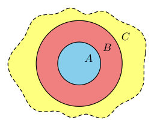
<figcaption class="paper-figure-caption"><b>Fig 1.</b> FIG. 1. Geometry used to define the Markov length in two dimensions. Here, C is any finite region encircling A, with B filling the space between them.</figcaption>
</figure>
<figure class="paper-figure-card">
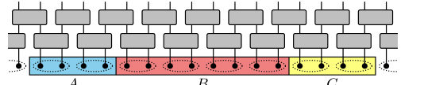
<figcaption class="paper-figure-caption"><b>Fig 2.</b> FIG. 2. Gate structure of the depth-2 channel E (gray boxes). Individual sites (black dots) are grouped into two-site unit cells (dotted lines). The CMI regions A, B, and C each consist of a whole number of unit cells.</figcaption>
</figure>
<figure class="paper-figure-card">
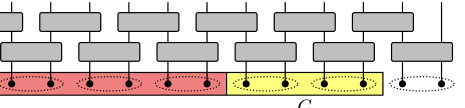
<figcaption class="paper-figure-caption"><b>Fig 3.</b> FIG. 3. Channel structure of a finite open chain containing the causal cone of ABC.</figcaption>
</figure>
</div>

<p><strong>Summary.</strong> This work proves that the Markov length, a useful measure for characterizing quantum phases, is not robust against weak local noise channels. The instability manifests as an algebraic decay of the conditional mutual information, even when the channels are nearly identity operations. This challenges current theoretical frameworks that rely on the stability of such quantities for defining phase equivalence.</p>
<p><strong>Why it may be interesting.</strong> It provides a rigorous mathematical challenge to definitions of phase equivalence in quantum many-body systems by showing that simple local perturbations can destroy key long-range order parameters.</p>
<details>
<summary>Detailed structure</summary>
<p><strong>Main problem.</strong> The paper investigates the stability of the Markov length, a quantity used to characterize mixed-state phases of matter, under the influence of weak local quantum channels.</p>
<p><strong>Main result.</strong> The Markov length is generally unstable under weak local channels, failing even for pure product states due to algebraic decay of the conditional mutual information (CMI).</p>
<p><strong>Method.</strong> The authors use asymptotic analysis, Fourier methods, and spectral analysis of correlation matrices derived from Gaussian states to calculate the decay rates of the CMI.</p>
<p><strong>Model / system.</strong> The analysis is performed on one-dimensional fermionic chains, generalized to bosonic and qubit chains, focusing on translation-invariant states with local rank deficiency.</p>
<p><strong>Key observables.</strong> Conditional Mutual Information (CMI), von Neumann entropy, and the Markov length ($\xi$).</p>
<p><strong>Important parameters / regimes.</strong> Channel strength ($\epsilon$), system size ($N$), and the nature of the local channels (e.g., Gaussian channels).</p>
<p><strong>Assumptions / limitations.</strong> The instability is shown to hold for any translation-invariant state possessing at least one rank-deficient reduced density operator.</p>
<p><strong>Figures summary.</strong> Figure 1 illustrates the geometry defining the Markov length, while Figure 2 shows the gate structure of the depth-two channel acting on a fermionic chain.</p>
<p><strong>Paper structure.</strong> The paper establishes the definition of the Markov length via CMI, demonstrates the instability using a fermionic chain model, analyzes the algebraic decay rooted in spectral properties, and discusses the implications for phase equivalence.</p>
</details>
<details>
<summary>Abstract</summary>
<p>The Markov length, the length scale governing the exponential decay of conditional mutual information (CMI) in a quantum many-body state, has proven useful for characterizing mixed-state phases of matter. Nevertheless, we show that a state's Markov length is not generally stable under weak local channels. The failure of stability occurs already at a pure product state. We demonstrate this explicitly in a one-dimensional fermionic chain, where a fine-tuned depth-two circuit of nearest-neighbor Gaussian channels maps the vacuum to a state whose CMI decays \emph{algebraically} and whose Markov length is therefore infinite, even when the channels are taken arbitrarily close to the identity. The algebraic decay is rooted in the nonanalyticity of the von Neumann entropy at rank-deficient density operators. We exhibit an analogous instability on an ordinary qubit chain. More generally, we show that the Markov length is unstable in any translation-invariant state with even a single rank-deficient reduced density operator. These results pose a challenge to recent definitions of mixed-state phase equivalence based on the Markov length.</p>
</details>
<p><sub><a href="#top">↑ back to top</a></sub></p>

<p><a id="paper-2610.13638"></a></p>
<h3 id="parametric-glassiness-in-graphene-based-electronic-levy-glass"><a href="http://arxiv.org/abs/2610.13638v1">Parametric Glassiness in Graphene-based Electronic Lévy Glass</a></h3>
<p><strong>Authors:</strong> Caue N. da Silva, Diego B. Fonseca, Adauto J. F. de Souza, Antônio M. S. Macêdo, Luiz Felipe C. Pereira, Anderson L. R. Barbosa<br>
<strong>Type:</strong> theory · <strong>Category:</strong> disordered systems and neural networks · <strong>PDF:</strong> <a href="https://arxiv.org/pdf/2610.13638v1">https://arxiv.org/pdf/2610.13638v1</a><br>
<strong>Analysis basis:</strong> full PDF text, analyzed in chunks
<strong>Topic relevance:</strong> <code>Keldysh / 2PI / non-Gaussian methods</code> <strong>1/5</strong> · <code>analog quantum simulation</code> <strong>1/5</strong> · <code>driven-dissipative phase transition</code> <strong>1/5</strong> · <code>methods for driven-dissipative</code> <strong>1/5</strong> · <code>non-equilibrium universality</code> <strong>1/5</strong> · <code>scars &amp; prethermalization</code> <strong>1/5</strong></p>
<div class="figure-strip-hint">↔ Scroll figures horizontally</div>
<div class="paper-figures-scroll">
<figure class="paper-figure-card">
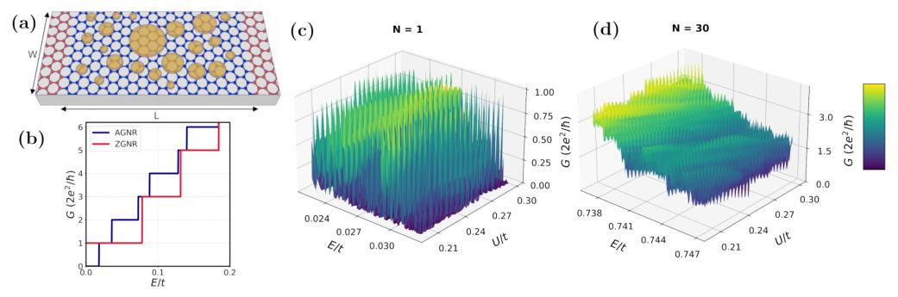
<figcaption class="paper-figure-caption"><b>Fig 1.</b> FIG. 1. (a) Illustration of an ELG sample. It consists of an AGNR-based representation in blue and with length L and width W, embedded in a random distribution of EQDs, illustrated in yellow. The sample is connected to two leads (shown in red) and deposited on a gray substrate. (b) The conductance G is plotted as a function of Fermi energy E (normalized by the hopping parameter t) for both pristine AGNR and ZGNR samples. In panels (c) and (d), the conductance energy spectrum through an AGNR-based ELG sample is presented as a function of electrostatic potential U for N = 1 and N = 30, where N is the number of propagating modes in the leads, respectively.</figcaption>
</figure>
<figure class="paper-figure-card">
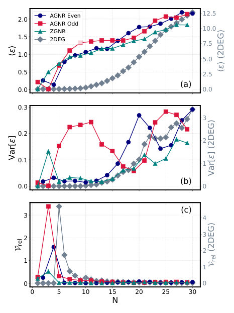
<figcaption class="paper-figure-caption"><b>Fig 2.</b> FIG. 2. (a) Mean and (b) variance of the conductance energy spectral intensity, Eqs. 1 and 2, and (c) the dimensionless relative variance Vrel = var[ϵ]/⟨ϵ⟩2 versus propagating wave modes N, for AGNR (even and odd modes separated), ZGNR, and 2DEG-based ELG samples. The left vertical axis uses the common scale for AGNR and ZGNR samples, while the right vertical axis uses the 2DEG scale.</figcaption>
</figure>
<figure class="paper-figure-card">
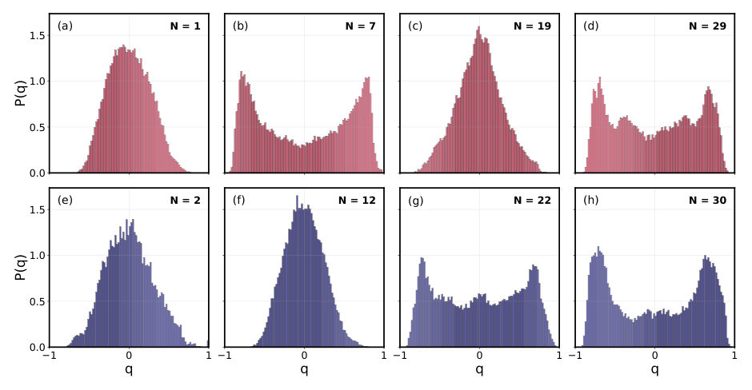
<figcaption class="paper-figure-caption"><b>Fig 3.</b> FIG. 3. Histograms of the parametric-overlap distribution P(q) of AGNR-based ELG samples for different wave modes N ((a-d) odd modes in blue, (e-h) even modes in red), showing reentrant changes in spectral correlations as N varies.</figcaption>
</figure>
<figure class="paper-figure-card">
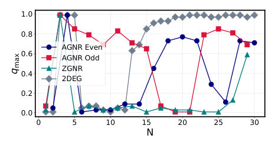
<figcaption class="paper-figure-caption"><b>Fig 4.</b> FIG. 4. qmax (values of q which maximize the distribu- tion P(|q|)) versus wave modes N for AGNR (even and odd modes), ZGNR, and the 2DEG-based ELG samples.</figcaption>
</figure>
</div>

<p><strong>Summary.</strong> This work analyzes parametric mesoscopic glassiness in graphene-based electronic Lévy glasses by studying how transport properties change when a system parameter (like the Fermi energy or electrostatic potential) is tuned. The authors use an overlap distribution, inspired by spin-glass theory, to show reentrant behavior, suggesting that the transport landscape undergoes reorganizations indicative of mesoscopic chaos rather than reaching a true thermodynamic equilibrium.</p>
<p><strong>Why it may be interesting.</strong> The concept of 'parametric glassiness' offers a non-equilibrium analogue to spin-glass physics, providing a powerful diagnostic tool for understanding complex, highly structured transport in disordered quantum materials.</p>
<details>
<summary>Detailed structure</summary>
<p><strong>Main problem.</strong> The study investigates parametric glassiness and RSB-like overlap phenomenology in complex disordered conductors, distinguishing this from equilibrium glass phases.</p>
<p><strong>Main result.</strong> The system exhibits reentrant changes in overlap distributions when tuning the Fermi energy, suggesting pinning and parameter-induced reorganizations in coherent transport, which is general to scale-free disorder geometries.</p>
<p><strong>Method.</strong> Transport properties are calculated using the Landauer-Büttiker relation within a tight-binding framework, and the overlap distribution is analyzed by varying the electrostatic potential (parametric replica).</p>
<p><strong>Model / system.</strong> The system is a graphene-based electronic Lévy glass (ELG) containing randomly distributed Electrostatic Quantum Dots (EQDs) whose radii follow a power-law distribution. The Hamiltonian is defined by hopping and on-site potentials.</p>
<p><strong>Key observables.</strong> Overlap distribution $P(q)$, mean and variance of the conductance energy spectrum ($\langle \epsilon 
angle$, $ ext{var}[\epsilon]$), and the relative variance $V_{	ext{rel}}$.</p>
<p><strong>Important parameters / regimes.</strong> Fermi energy ($E$), electrostatic potential ($U$), and the number of propagating wave modes ($N$).</p>
<p><strong>Assumptions / limitations.</strong> The interpretation of the overlap is explicitly distinguished from the equilibrium Parisi construction, as the parameter change ($U$) modifies the Hamiltonian.</p>
<p><strong>Figures summary.</strong> Figures illustrate the dependence of conductance on $E$ and $U$, and show the overlap distribution $P(q)$ exhibiting reentrant behavior as the number of modes $N$ changes for both graphene and 2DEG systems.</p>
<p><strong>Paper structure.</strong> The paper establishes the physical model (ELG), introduces the diagnostic tool (RSB-like overlap), analyzes the effect of tuning parameters ($E$ or $U$), and concludes by interpreting the reentrant behavior as evidence of mesoscopic chaos rather than thermodynamic equilibrium.</p>
</details>
<details>
<summary>Abstract</summary>
<p>Complex disordered conductors can display highly structured and parameter-sensitive transport even in the absence of a thermodynamically stable glass phase. Overlap distributions originally developed for replica symmetry breaking (RSB) provide a useful diagnostic of this organization, provided that their interpretation is distinguished from the equilibrium Parisi construction. In this study, we report RSB-like overlap phenomenology and parametric mesoscopic glassiness in a graphene-based electronic Lévy glass, a device that mimics optical phenomena via electronic processes. By tuning the Fermi energy, we can control the number of propagating wave modes and observe reentrant changes from narrowly centered to broad or bimodal overlap distributions. The phenomenology is observed in both graphene-based and conventional two-dimensional electron-gas electronic Lévy glasses, indicating its generality. Sample-resolved overlap distributions show that the effect is intrinsic to each disorder landscape, whereas the normalized conductance variance shows that the growth of the absolute variance is mainly caused by the increasing mean conductance. We therefore interpret the overlap as a measure of correlation among hierarchically organized transport pathways and the reentrant behavior as evidence of pinning, parameter-induced reorganizations, and mesoscopic chaos in coherent transport.</p>
</details>
<p><sub><a href="#top">↑ back to top</a></sub></p>

<p><a id="paper-2610.12635"></a></p>
<h3 id="entropic-ordered-superfluid"><a href="http://arxiv.org/abs/2610.12635v1">Entropic-ordered superfluid</a></h3>
<p><strong>Authors:</strong> Isabella Zane, Andrew Lucas<br>
<strong>Type:</strong> theory · <strong>Category:</strong> statistical mechanics · <strong>PDF:</strong> <a href="https://arxiv.org/pdf/2610.12635v1">https://arxiv.org/pdf/2610.12635v1</a><br>
<strong>Analysis basis:</strong> full PDF text, analyzed in chunks
<strong>Topic relevance:</strong> <code>Frenkel-Kontorova</code> <strong>1/5</strong> · <code>Keldysh / 2PI / non-Gaussian methods</code> <strong>1/5</strong> · <code>driven-dissipative phase transition</code> <strong>1/5</strong> · <code>methods for driven-dissipative</code> <strong>1/5</strong> · <code>non-equilibrium universality</code> <strong>1/5</strong></p>
<div class="figure-strip-hint">↔ Scroll figures horizontally</div>
<div class="paper-figures-scroll">
<figure class="paper-figure-card">
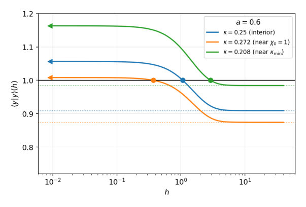
<figcaption class="paper-figure-caption"><b>Fig 1.</b> Figure 1: The transverse fluctuation strength g(h) = ⟨y|y⟩(h) at a = 0.6 for three values of κ. Arrows mark the h →0 limits χ0, dotted lines the asymptotes 1/(2κ + a), and dots the crossings of the Goldstone level g = 1, i.e., the ordered states. The curve is strictly decreasing, so each crossing is transversal and unique: det B &gt; 0 by (G.25). Near the critical line the crossing slides to h →0; near κmin the asymptote pinches against the level and the crossing escapes to h →∞; in both limits the crossing flattens, which is the linear vanishing of det B at the marginal edges.</figcaption>
</figure>
<figure class="paper-figure-card">
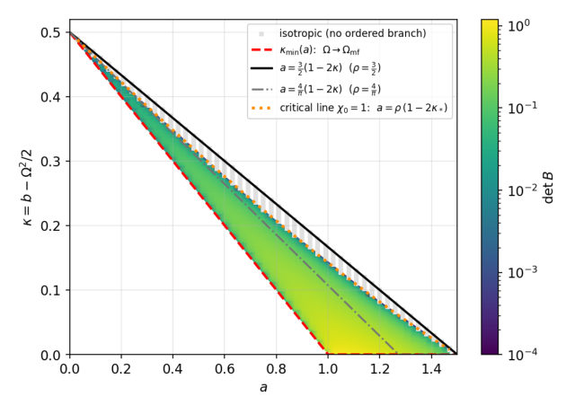
<figcaption class="paper-figure-caption"><b>Fig 2.</b> Figure 2: det B on the ordered branch over the wedge (a, κ), exactly independent of temperature. Grey squares: no ordered branch (χ0 &lt; 1). The ordered region is bounded below by κmin(a) (red dashed; Ω→Ω1 for a ≤1) and above by the exact critical line χ0 = 1 (orange dotted), which satisfies a = ρ (1 −2κ∗) with ρ ∈(4/π, 3</figcaption>
</figure>
<figure class="paper-figure-card">
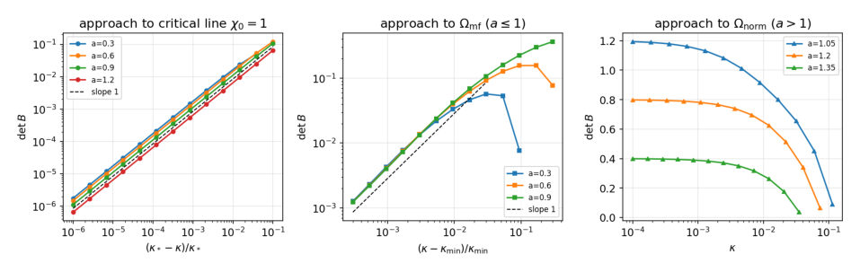
<figcaption class="paper-figure-caption"><b>Fig 3.</b> Figure 3: Approach to the three boundaries of the ordered region. Left: critical line, det B ∝(κ∗−κ) down to relative distance 10−6. Middle: collective threshold Ω→Ω1 (a ≤1), det B ∝(κ −κmin); the downturn at the right of each curve is the approach to the critical line. Right: single-rotor threshold Ω→Ω2 (a &gt; 1): det B remains O(1), since the collective amplitude sector stays stiff at the condensate transition.</figcaption>
</figure>
</div>

<p><strong>Summary.</strong> This paper develops a classical lattice model for superfluidity exhibiting 'entropic order' at high temperatures. By analyzing the system's dynamics using a soft-rotor XY model, the authors confirm that the superfluid state remains dynamically stable, passing rigorous mathematical tests concerning spectral gaps and fluctuation-dissipation consistency.</p>
<p><strong>Why it may be interesting.</strong> The concept of 'entropic order' providing high-temperature stability is a non-standard mechanism for order, and the rigorous mathematical treatment of the resulting hydrodynamics connects statistical mechanics to advanced PDE theory (hypocoercivity).</p>
<details>
<summary>Detailed structure</summary>
<p><strong>Main problem.</strong> To understand the dynamics of a superfluid that maintains order at arbitrarily high temperatures due to 'entropic order,' and to verify the consistency of its hydrodynamics with fundamental theorems.</p>
<p><strong>Main result.</strong> The analysis confirms that the system exhibits spectral gaps for non-Goldstone modes, suggesting the dynamics remain well-defined even in the high-temperature, entropic-ordered regime.</p>
<p><strong>Method.</strong> The study employs mean-field theory, analyzing the system's dynamics using overdamped Langevin equations and applying advanced mathematical tools like Poincaré inequalities and spectral gap analysis.</p>
<p><strong>Model / system.</strong> The model is a minimal classical lattice system based on a modified 3D XY model incorporating 'soft' rotors, allowing for continuous variables and modeling superfluidity via entropic ordering.</p>
<p><strong>Key observables.</strong> Order parameter ($ar{s}$), average rotor length ($ar{r}$), hydrodynamic behavior, and the spectral gap ($\lambda'$).</p>
<p><strong>Important parameters / regimes.</strong> Temperature ($T$) relative to a critical temperature ($T_c$), and the coupling parameters ($a, b$) of the soft rotor Hamiltonian.</p>
<p><strong>Assumptions / limitations.</strong> The analysis relies on the mean-field limit and assumes the validity of coercivity conditions (H2, H3, H4) for establishing spectral properties.</p>
<p><strong>Figures summary.</strong> Not specified.</p>
<p><strong>Paper structure.</strong> The paper progresses from defining the soft rotor model and its thermodynamics (mean-field analysis) to studying the resulting hydrodynamics, culminating in a rigorous mathematical analysis of the spectral properties and coercivity of the evolution operator.</p>
</details>
<details>
<summary>Abstract</summary>
<p>We present a minimal classical lattice model of superfluidity at arbitrarily high temperatures, using a modified three-dimensional XY model with ``soft" rotors. The global U(1) symmetry is spontaneously broken above a positive critical temperature due to entropic order. We study hydrodynamics in this high-temperature regime and verify consistency with the fluctuation-dissipation theorem, explaining how the large noise variance at very high temperatures is not sufficient to destroy superfluidity or the long lifetime of Goldstone modes.</p>
</details>
<p><sub><a href="#top">↑ back to top</a></sub></p>

<p><a id="paper-2610.12996"></a></p>
<h3 id="real-time-relaxation-dynamics-of-dark-excitons-in-mirror-symmetric-monolayers"><a href="http://arxiv.org/abs/2610.12996v1">Real-Time Relaxation Dynamics of Dark Excitons in Mirror-Symmetric Monolayers</a></h3>
<p><strong>Authors:</strong> Rishabh Saraswat, Mantasha Ansari, Rekha Verma, Sitangshu Bhattacharya<br>
<strong>Type:</strong> theory · <strong>Category:</strong> strongly correlated electrons · <strong>PDF:</strong> <a href="https://arxiv.org/pdf/2610.12996v1">https://arxiv.org/pdf/2610.12996v1</a><br>
<strong>Analysis basis:</strong> full PDF text, analyzed in chunks
<strong>Topic relevance:</strong> <code>Keldysh / 2PI / non-Gaussian methods</code> <strong>1/5</strong> · <code>correlated / nonlocal dissipation</code> <strong>1/5</strong> · <code>driven-dissipative phase transition</code> <strong>1/5</strong> · <code>methods for driven-dissipative</code> <strong>1/5</strong></p>
<div class="figure-strip-hint">↔ Scroll figures horizontally</div>
<div class="paper-figures-scroll">
<figure class="paper-figure-card">
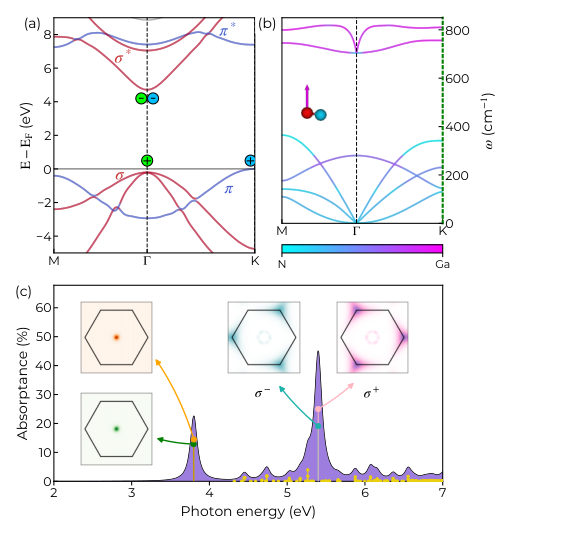
<figcaption class="paper-figure-caption"><b>Fig 1.</b> FIG. 1. (a) G0W0 band structure of monolayer GaN with band sym- metries, with parities of the bands overlaid. Blue is p = −1, while red is p = +1, with the σ and π-like band edges labelled. Lime and blue markers denote the bright (Q = 0) and momentum-dark excitons, respectively. (b) Phonon dispersion with the green dashed line marks modes providing the requisite momentum for phonon- assisted PLE. Inset: atomic displacements of the lowest energy mode (Ga: red, N: blue). The colorbar defines each atoms contribution. (c) Absorptance spectrum with excitonic oscillator strengths (yellow bars). The lowest-energy and brightest doubly degenerate excitons are highlighted in orange/green and...</figcaption>
</figure>
<figure class="paper-figure-card">
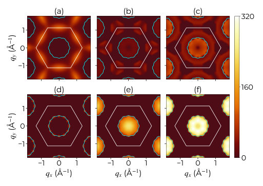
<figcaption class="paper-figure-caption"><b>Fig 2.</b> FIG. 2. (a)-(f) The exc-ph coupling strength, Gβλν(0, q) 2 (in 102 meV2) from the lowest bright exciton at Γ (λ = 1) to the lowest excitonic band (β = 1) at Q + q = q, mapped across the BZ for the six energy-ordered phonon branches of monolayer GaN. The cyan line marks the transition of the lowest excitonic band from even par- ity (p = +1) to odd (p = −1). All panels share the same color scale.</figcaption>
</figure>
<figure class="paper-figure-card">
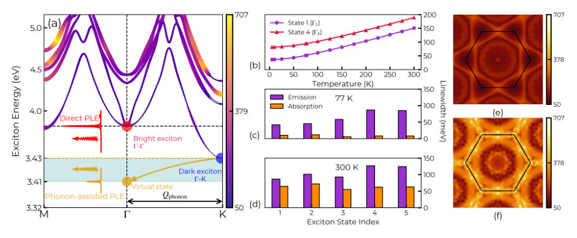
<figcaption class="paper-figure-caption"><b>Fig 3.</b> FIG. 3. (a) Exciton dispersion for the five lowest excitons. The size and colormap of the bands represent the linewidth at 300 K for each point. The phonon-assisted PLE mechanism has been plotted against each band. The satellite is in gold, the bright peak is in red. Qphonon represents the phonon momentum that connects K to Γ. (b) The linewidths for the exciton states 1 and 4 at Γ have been plotted for temperatures ranging from 5–300 K. (c)-(d) The linewidths segregated by the emission and absorption components for the first 5 excitonic bands at the Γ point are plotted, at temperatures 77 K and 300 K respectively. (e)-(f) The linewidths at 300 K plotted for the states 1 and 4 across the BZ....</figcaption>
</figure>
<figure class="paper-figure-card">
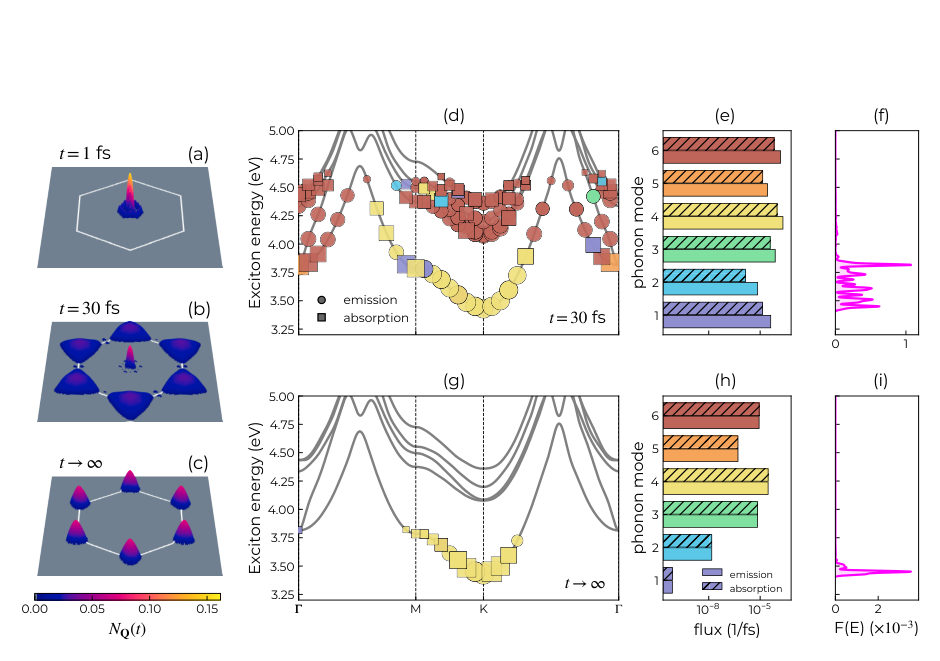
<figcaption class="paper-figure-caption"><b>Fig 4.</b> FIG. 4. Real-time snapshots of exciton thermalization in monolayer GaN at 300 K, following optical injection at Q = 0 weighted by oscillator strengths. (a)–(c) Exciton occupation NQ across the Brillouin zone at t = 1 fs, 30 fs, and after thermalization. (d),(g) The same population projected onto the exciton dispersion at 30 fs and t →∞; marker area scales with occupation of the dominant channel filling a state, circles denote emission, squares denote absorption, and color identifies the dominant phonon branch. (e),(h) The instantaneous scattering flux resolved by branch, separated into emission and absorption, plotted on a shared logarithmic axis. (f),(i) The corresponding energy...</figcaption>
</figure>
</div>

<p><strong>Summary.</strong> This work uses group theory and many-body perturbation theory to derive exact mirror parity selection rules governing exciton-phonon scattering in planar monolayers. By solving the real-time Boltzmann transport equation, the authors map out how symmetry dictates the actual relaxation pathways and linewidths of dark excitons in materials like GaN and hBN.</p>
<p><strong>Why it may be interesting.</strong> The rigorous application of symmetry principles (group theory) to dictate the dynamics of open quantum systems (excitons coupled to phonons) provides a powerful framework for understanding energy relaxation in solid-state quantum emitters.</p>
<details>
<summary>Detailed structure</summary>
<p><strong>Main problem.</strong> The study determines if mirror parity selection rules govern not just allowed but also the actual exciton-phonon scattering channels responsible for relaxation and indirect emission across the entire Brillouin zone.</p>
<p><strong>Main result.</strong> The analysis establishes strict selection rules based on mirror parity ($\sigma_h$), showing that only specific phonon modes can mediate scattering, which dictates the exciton's relaxation pathway across the BZ.</p>
<p><strong>Method.</strong> The authors combine group theory with ab initio many-body perturbation theory to derive parity rules, and then solve the real-time Boltzmann transport equation (rt-BTE) to model time-dependent exciton populations.</p>
<p><strong>Model / system.</strong> The research focuses on planar D3h monolayers, using GaN and hBN as test cases. The model incorporates exciton-phonon coupling derived from symmetry analysis across the entire Brillouin zone.</p>
<p><strong>Key observables.</strong> Exciton linewidths, exciton parity ($\sigma_h$), exciton population dynamics $N_Q(t)$, and exciton-phonon coupling strength $G_{eta\lambda
u}$.</p>
<p><strong>Important parameters / regimes.</strong> Temperature (77 K and 300 K), momentum ($\mathbf{Q}$), and the symmetry element ($\sigma_h$).</p>
<p><strong>Assumptions / limitations.</strong> The analysis assumes the existence of a horizontal mirror plane ($\sigma_h$) and that $\sigma_h$ commutes with the BSE Hamiltonian.</p>
<p><strong>Figures summary.</strong> Figures map exc-ph coupling strength across the BZ, show exciton dispersion and linewidths at different temperatures, and illustrate time-snapshots of exciton occupation across the BZ.</p>
<p><strong>Paper structure.</strong> The paper first derives the mirror parity ($\sigma_h$) selection rules using group theory and ab initio methods. It then applies these rules to calculate exciton linewidths and solves the real-time Boltzmann transport equation to track population dynamics, benchmarking results on GaN and hBN.</p>
</details>
<details>
<summary>Abstract</summary>
<p>Symmetry governs which exciton-phonon (\textit{exc-ph}) scattering channels \textit{can} exist, but not which a relaxing exciton actually uses. Combining group theory with \textit{ab initio} many-body perturbation theory, we derive the mirror parity $σ_h$, of finite-momentum excitons in planar $D_{3h}$ monolayers, and form exact \textit{exc-ph} selection rules that hold across the whole Brillouin zone. The parity of the lowest exciton band changes across a closed contour. The even phonons connect states of the same parity, while odd phonons connect states of opposite parity. We use these rules to compute exciton linewidths and we solve the real-time Boltzmann transport equation for monolayer GaN as the test case and benchmark it against monolayer \textit{h}BN.</p>
</details>
<p><sub><a href="#top">↑ back to top</a></sub></p>

<p><a id="paper-2610.13084"></a></p>
<h3 id="evolution-and-breakdown-of-chiral-anomaly-in-weyl-semiconductor-tellurium"><a href="http://arxiv.org/abs/2610.13084v1">Evolution and breakdown of chiral anomaly in Weyl semiconductor tellurium</a></h3>
<p><strong>Authors:</strong> Zhifeng Xue, Jiaji Zhao, Yi Ji, Fuyang Chen, Nannan Tang, Gangjian Jin, Bing Shen, Bin Wang, Yang Wang, Mingxi Chi, Jin-Zhu Zhao, Ruiqiang Wang, Qizhong Zhu, He Wang, Huakun Zuo, Donghui Guo, Dingyong Zhong, Mingxun Deng, Huichao Wang<br>
<strong>Type:</strong> both · <strong>Category:</strong> strongly correlated electrons · <strong>PDF:</strong> <a href="https://arxiv.org/pdf/2610.13084v1">https://arxiv.org/pdf/2610.13084v1</a><br>
<strong>Analysis basis:</strong> full PDF text, analyzed in chunks
<strong>Topic relevance:</strong> <code>driven-dissipative phase transition</code> <strong>1/5</strong> · <code>non-equilibrium universality</code> <strong>1/5</strong></p>
<div class="figure-strip-hint">↔ Scroll figures horizontally</div>
<div class="paper-figures-scroll">
<figure class="paper-figure-card">
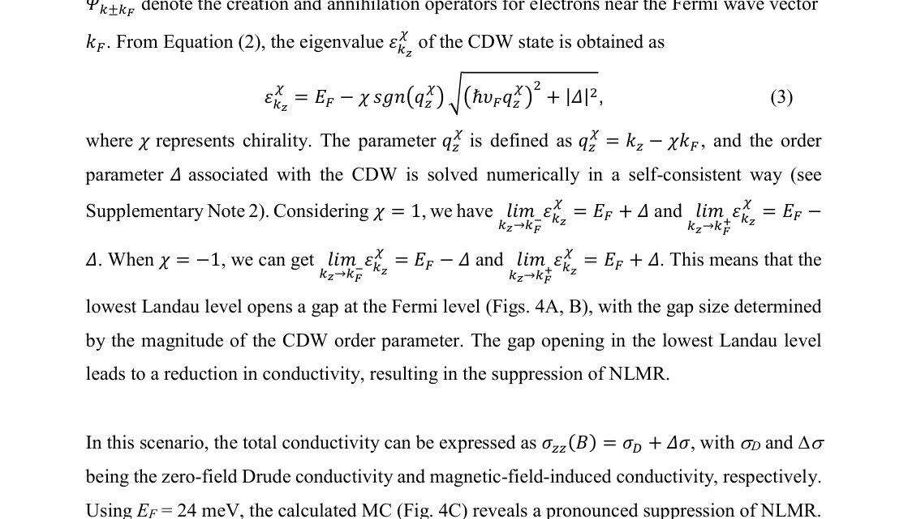
<figcaption class="paper-figure-caption"><b>Fig 1.</b> Figure 4D shows the phase diagram based on the values of order parameter ∆, where the black</figcaption>
</figure>
<figure class="paper-figure-card">
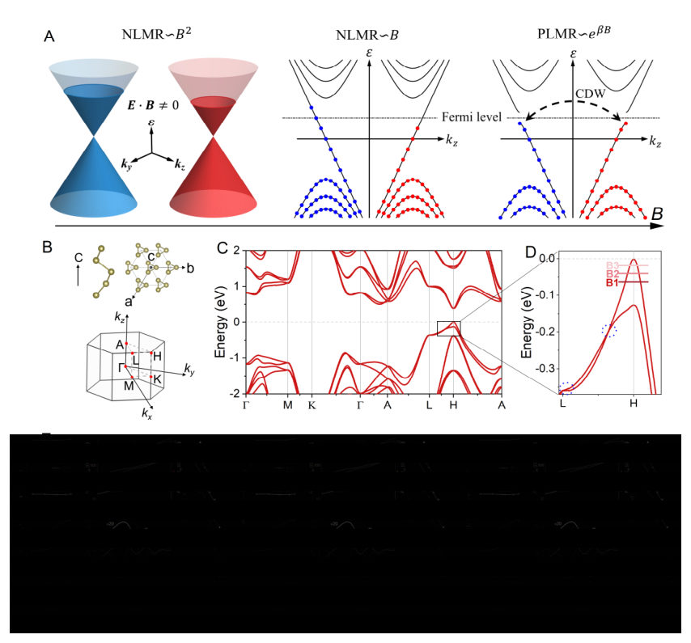
<figcaption class="paper-figure-caption"><b>Fig 2.</b> Figure 1. Electronic band structure and Weyl physics in Weyl semiconductor Te. A</figcaption>
</figure>
<figure class="paper-figure-card">
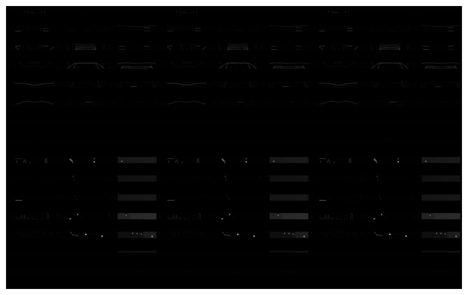
<figcaption class="paper-figure-caption"><b>Fig 3.</b> Figure 2. Fermi-level-modulated negative longitudinal magnetoresistance. A-C The</figcaption>
</figure>
<figure class="paper-figure-card">
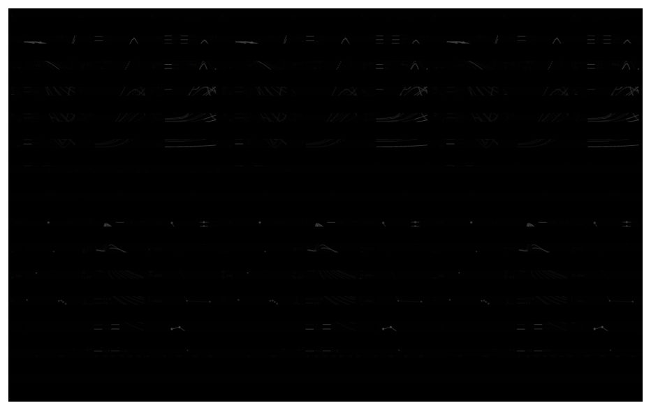
<figcaption class="paper-figure-caption"><b>Fig 4.</b> Figure 3. The evolution of negative longitudinal magnetoresistance under high magnetic</figcaption>
</figure>
<figure class="paper-figure-card">
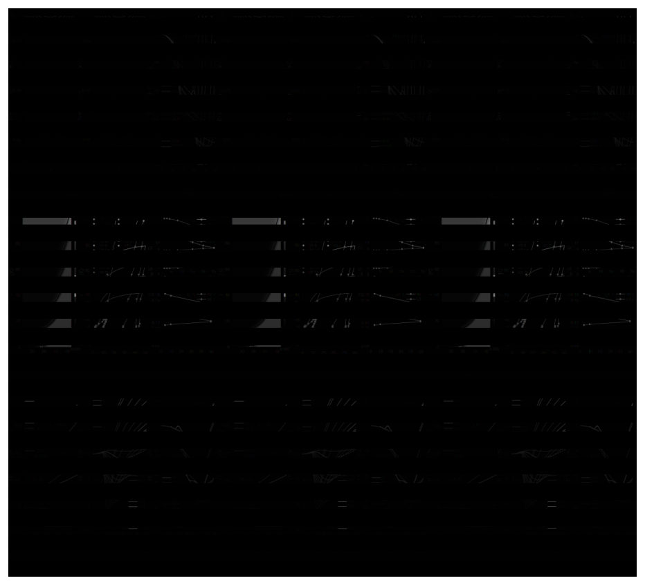
<figcaption class="paper-figure-caption"><b>Fig 5.</b> Figure 4. Suppression and reversal of the negative longitudinal magnetoresistance (LMR)</figcaption>
</figure>
</div>

<p><strong>Summary.</strong> This work explores the chiral anomaly in Weyl semiconductor tellurium, demonstrating that the negative longitudinal magnetoresistance (NLMR) is highly tunable by controlling the Fermi level. Crucially, the research reports a dramatic reversal of this MR to a positive value in the extreme quantum limit, suggesting a field-induced transition into a correlated electronic state like a Charge Density Wave.</p>
<p><strong>Why it may be interesting.</strong> The observation of a field-induced phase transition (CDW formation) driven by electron-electron interactions in a topological material under extreme magnetic fields provides a rich playground for studying emergent correlated quantum states, which is highly relevant to strongly correlated electron physics.</p>
<details>
<summary>Detailed structure</summary>
<p><strong>Main problem.</strong> The paper investigates the tunability and evolution of the chiral anomaly, which manifests as negative longitudinal magnetoresistance (NLMR), in topological Weyl semiconductor tellurium.</p>
<p><strong>Main result.</strong> The NLMR is robustly linked to the chiral anomaly, but in the extreme quantum limit, the magnetoresistance reverses to positive values, suggesting a field-induced phase transition into a collective electronic state, possibly a Charge Density Wave (CDW).</p>
<p><strong>Method.</strong> The study combines first-principles calculations, quantum oscillation measurements (SdH), and detailed fitting of longitudinal magnetoresistance (LMR) and magnetoconductivity (MC) data.</p>
<p><strong>Model / system.</strong> The physical system is doped tellurium, a Weyl semiconductor exhibiting massless Weyl fermions. The analysis models transport by incorporating contributions from the chiral anomaly, weak localization/antilocalization effects, and standard magnetoconductivity terms.</p>
<p><strong>Key observables.</strong> Negative Longitudinal Magnetoresistance (NLMR), Positive Longitudinal Magnetoresistance (PLMR), chiral anomaly coefficient ($C_w$), and magnetoconductivity ($\sigma_{xx}$).</p>
<p><strong>Important parameters / regimes.</strong> Fermi level ($E_F$) tuning relative to the Weyl point, magnetic field strength (especially in the quantum limit), and cryogenic temperatures.</p>
<p><strong>Assumptions / limitations.</strong> The NLMR is primarily attributed to the chiral anomaly due to its field-orientation dependence, and the PLMR reversal is linked to electron-electron interactions (EEI) driving a CDW state.</p>
<p><strong>Figures summary.</strong> Figures illustrate the band structure showing Weyl points, LMR curves demonstrating NLMR enhancement near the Weyl point, and the reversal to PLMR at high fields, alongside SdH oscillations confirming the Fermi surface structure.</p>
<p><strong>Paper structure.</strong> The paper progresses by establishing the platform (Te), quantifying the chiral anomaly via tunable NLMR, analyzing the crossover from low-field to quantum-limit transport, and finally proposing the CDW transition mechanism responsible for the MR reversal.</p>
</details>
<details>
<summary>Abstract</summary>
<p>Chiral anomaly in topological materials manifests as negative longitudinal magnetoresistance, yet the tunability and evolution of this effect remain elusive. Here we show that doped tellurium serves as a versatile platform to realize a giant negative longitudinal magnetoresistance that is highly tunable via the Fermi level and magnetic field. By moving the Fermi level towards the Weyl point, we observe a pronounced enhancement of negative magnetoresistance, which arises from chiral anomaly and robustly persists up to ambient temperature. Beyond the quantum limit, the system exhibits positive linear magnetoconductance, serving as a compelling transport signature of the chiral anomaly in the lowest Landau level. Notably, in the extreme quantum limit at cryogenic temperatures, the magnetoresistance undergoes a dramatic reversal from negative to positive. This reversal points to a potential field-induced phase transition into a collective electronic state driven by enhanced electron-electron interactions. Our findings provide valuable insights into the unconventional chiral transport and emergent correlated quantum states under extreme magnetic fields.</p>
</details>
<p><sub><a href="#top">↑ back to top</a></sub></p>

<p><a id="paper-2610.13879"></a></p>
<h3 id="gpu-based-parallel-bp-decoding-for-quantum-ldpc-memory"><a href="http://arxiv.org/abs/2610.13879v1">GPU-Based Parallel BP Decoding for Quantum LDPC Memory</a></h3>
<p><strong>Authors:</strong> Ming Wang, Yanbo Zhao, Ang Li, Frank Mueller<br>
<strong>Type:</strong> both · <strong>Category:</strong> quantum information and computing · <strong>PDF:</strong> <a href="https://arxiv.org/pdf/2610.13879v1">https://arxiv.org/pdf/2610.13879v1</a><br>
<strong>Analysis basis:</strong> full PDF text, analyzed in chunks
<strong>Topic relevance:</strong> <code>QC/QI experiment</code> <strong>1/5</strong> · <code>quantum measurements</code> <strong>1/5</strong></p>
<div class="figure-strip-hint">↔ Scroll figures horizontally</div>
<div class="paper-figures-scroll">
<figure class="paper-figure-card">
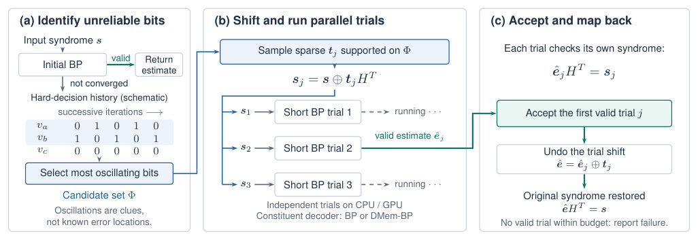
<figcaption class="paper-figure-caption"><b>Fig 1.</b> Figure 1: Overview of BP-SF. (a) An initial BP attempt returns immediately if its estimate satisfies the input syndrome; otherwise, hard-decision oscillations identify a candidate set Φ. (b) Sparse trial vectors supported on Φ generate shifted syndromes for independent BP trials. (c) The first syndrome-valid trial is mapped back by undoing its trial vector.</figcaption>
</figure>
<figure class="paper-figure-card">
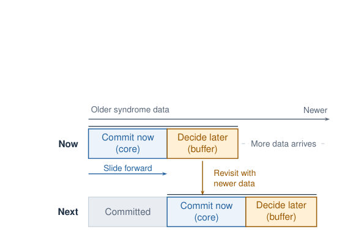
<figcaption class="paper-figure-caption"><b>Fig 2.</b> Figure 2: Schematic workflow for sliding-window decoding. Decode the core and buffer together, but finalize only the older core estimates. As new syndrome data arrive, slide the window forward and revisit the buffer with more context.</figcaption>
</figure>
<figure class="paper-figure-card">
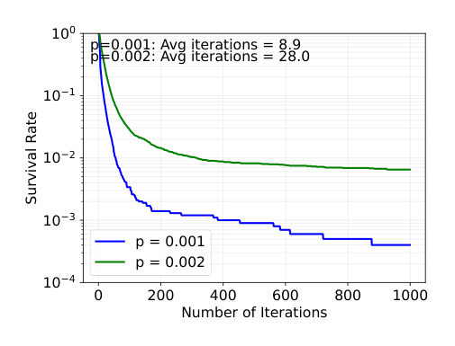
<figcaption class="paper-figure-caption"><b>Fig 3.</b> Figure 3: BP convergence survival on the J144, 12, 12K code under circuit-level noise with the fraction of samples not yet converged by each iteration. We use 10,000 samples per physical error rate and a maximum of 1,000 iterations.</figcaption>
</figure>
<figure class="paper-figure-card">
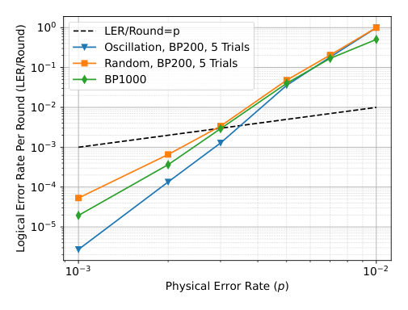
<figcaption class="paper-figure-caption"><b>Fig 4.</b> Figure 5: Effect of candidate selection on the J144, 12, 12K code under circuit-level noise. “5 Trials” denotes one initial BP attempt and up to four additional trials upon failure, with at most 200 iterations per attempt. Each additional trial re- verses one prior LLR. Candidate positions are the four most oscillating bits or are selected at random. BP1000 uses a sin- gle attempt with at most 1,000 iterations.</figcaption>
</figure>
<figure class="paper-figure-card">
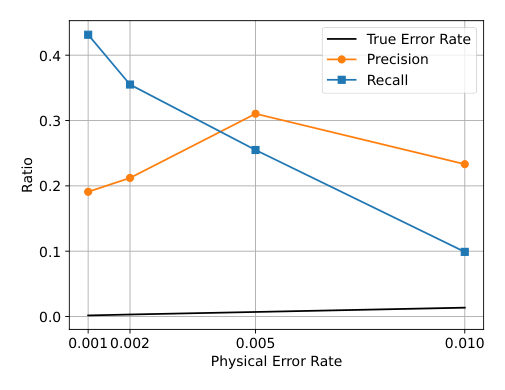
<figcaption class="paper-figure-caption"><b>Fig 5.</b> Figure 4: Precision and recall probabilities of candidate bit selection on the J144, 12, 12K code. We evaluate the correla- tion between candidate bits and actual error locations by identifying the top 50 most frequently flipped bits among approximately 8,700 error mechanisms (fewer than 50 are selected if some of the top-ranked bits are never flipped). The decoder is run with a maximum of 50 iterations, and statis- tics are collected over 1,000 decoding failures. This analysis reveals how well bit-level oscillation can serve as a heuristic for error localization.</figcaption>
</figure>
</div>

<p><strong>Summary.</strong> This paper presents highly optimized, GPU-accelerated decoding algorithms for quantum LDPC codes used in quantum memory. By introducing windowed and streaming operations to the Belief Propagation decoder, the authors achieve substantial speedups and reduced latency compared to existing state-of-the-art methods. These results are crucial for realizing fault-tolerant quantum computation by enabling faster error correction cycles.</p>
<p><strong>Why it may be interesting.</strong> The focus on high-speed, low-latency decoding algorithms directly impacts the feasibility and scaling of quantum computation, which is a core concern for quantum information theorists.</p>
<details>
<summary>Detailed structure</summary>
<p><strong>Main problem.</strong> Developing fast and accurate decoders for quantum low-density parity-check (qLDPC) codes to support fault-tolerant quantum computing and keep pace with syndrome extraction rates.</p>
<p><strong>Main result.</strong> The proposed parallel BP-SF decoder significantly reduces the 99.9th-percentile call latency by a factor of 13.15, and windowed decoding achieves a 17.1-fold speedup over monolithic methods in long-running memory simulations.</p>
<p><strong>Method.</strong> The work extends Belief Propagation (BP) decoding using syndrome-flip trials (BP-SF) by implementing windowed and streaming operations on a CUDA-accelerated platform, alongside advanced graph transformations like GARI.</p>
<p><strong>Model / system.</strong> The system involves quantum error correction (QEC) using qLDPC codes, where the decoder processes syndrome measurements derived from Pauli operators acting on physical qubits.</p>
<p><strong>Key observables.</strong> 99.9th-percentile call latency, logical error rate (LER), per-round compute time, and correction-release age (delay).</p>
<p><strong>Important parameters / regimes.</strong> Tested on the [[144,12,12]] bivariate bicycle code at a physical error rate p = 0.002, and simulated up to 512 decoding rounds.</p>
<p><strong>Assumptions / limitations.</strong> The use of BP as an approximation for the #P-complete exact quantum decoding problem, and approximations in full-frame decoding such as factorizing second-sector priors.</p>
<p><strong>Figures summary.</strong> Figures illustrate the workflow for BP-SF, detailing initial BP, oscillation detection, sparse trial generation, and the process for sliding-window decoding.</p>
<p><strong>Paper structure.</strong> The paper builds upon prior BP-SF work by integrating it with GPU acceleration, windowing, and joint correlated-error models to address the practical challenges of continuous syndrome data arrival in quantum memory.</p>
</details>
<details>
<summary>Abstract</summary>
<p>Quantum low-density parity-check (qLDPC) decoding requires reliable corrections and low latency over long syndrome histories. We extend BP-SF, an oscillation-guided belief-propagation (BP) decoder with independent syndrome-flip trials, by introducing windowed and streaming operations. Our CUDA implementation combines disordered-memory retries, sliding windows, correlation-aware graphs, and layered scheduling. Circuit-level simulations test fixed-basis memory and complete logical Pauli-frame recovery. On the [[144,12,12]] bivariate bicycle code at physical error rate p = 0.002, parallel BP-SF reduces 99.9th-percentile call latency by a factor of 13.15 relative to an eight-chain Relay-BP GPU baseline on 100,000 matched samples for which every tested method's initial BP stage fails within 80 iterations. Windowed BP-SF maintains a flat logical error rate and nearly constant per-round compute time through 512 rounds, reaching a 17.1-fold speedup over monolithic decoding. In 512-round full-frame streaming decoding with 2.97-ms syndrome arrivals, layered BP-SF on a transformed joint graph with 20 retries reduces 99.9th-percentile correction-release age from 166.29 to 36.25 ms relative to the joint graph with flooding updates and 100 retries. These results connect parallel BP post-processing to lower decoding costs and earlier correction release in streaming quantum memory.</p>
</details>
<p><sub><a href="#top">↑ back to top</a></sub></p>

<p><a id="paper-2610.13903"></a></p>
<h3 id="maximally-antiflat-fixed-particle-number-fermionic-states"><a href="http://arxiv.org/abs/2610.13903v1">Maximally antiflat fixed-particle-number fermionic states</a></h3>
<p><strong>Authors:</strong> Rahul Gupta, Arya Haghighian, James D. Whitfield<br>
<strong>Type:</strong> theory · <strong>Category:</strong> other · <strong>PDF:</strong> <a href="https://arxiv.org/pdf/2610.13903v1">https://arxiv.org/pdf/2610.13903v1</a><br>
<strong>Analysis basis:</strong> full PDF text, analyzed in chunks
<strong>Topic relevance:</strong> <code>Keldysh / 2PI / non-Gaussian methods</code> <strong>1/5</strong> · <code>analog quantum simulation</code> <strong>1/5</strong></p>
<div class="figure-strip-hint">↔ Scroll figures horizontally</div>
<div class="paper-figures-scroll">
<figure class="paper-figure-card">
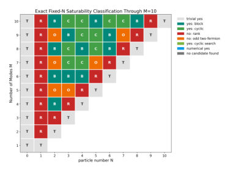
<figcaption class="paper-figure-caption"><b>Fig 1.</b> FIG. 1. Small-sector saturability classification through M ≤ 10. T: trivial vacuum/full sectors. B: block saturators. C: cyclic-family saturators. R: one-particle or one-hole rank ob- struction. O: odd-M two-fermion or two-hole obstruction.</figcaption>
</figure>
<figure class="paper-figure-card">
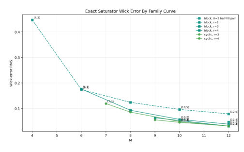
<figcaption class="paper-figure-caption"><b>Fig 2.</b> FIG. 2. Exact four-point Wick-error RMS for block and cyclic saturators versus M, grouped by family. All states shown have flat 1RDMs and maximal first antiflatness; the one-body data do not fix the connected quartic tensor, although for N ≤3 its Frobenius norm is fixed within each sector.</figcaption>
</figure>
</div>

<p><strong>Summary.</strong> This theoretical paper characterizes the limits of fermionic non-Gaussianity by studying 'antiflatness' ($F_1$) for fixed-particle-number states. It establishes that maximal $F_1$ requires the one-body density matrix to be perfectly uniform. Furthermore, it develops a quantitative hierarchy, showing that higher-order correlations are not independent but are strictly bounded by the degree of one-body flatness.</p>
<p><strong>Why it may be interesting.</strong> The rigorous mathematical framework connecting low-order correlation measures (like $F_1$) to higher-order structure ($\Lambda$) provides powerful tools for characterizing quantum entanglement and non-Gaussianity in interacting fermionic systems, relevant to strongly correlated materials.</p>
<details>
<summary>Detailed structure</summary>
<p><strong>Main problem.</strong> The study aims to characterize the extremal forms of fermionic antiflatness ($F_1$) and to establish a constrained hierarchy linking one-body flatness to higher-order correlations in pure, number-conserving fermionic states.</p>
<p><strong>Main result.</strong> Maximal first antiflatness is equivalent to the one-body reduced density matrix being completely uniform ($\Gamma = (N/M)I$), and the connected quartic structure is quantitatively bounded by $F_1$.</p>
<p><strong>Method.</strong> The authors use algebraic constraints derived from particle number conservation to relate the first antiflatness ($F_1$) to the 1RDM, and then employ density matrix purity arguments and specialized bounds (like Christiansen's estimate) to constrain higher-order cumulants.</p>
<p><strong>Model / system.</strong> The system consists of spinless fermionic modes described by creation/annihilation operators, restricted to pure quantum states with a fixed particle number $N$ within $M$ single-particle modes.</p>
<p><strong>Key observables.</strong> Fermionic Antiflatness ($F_1$), One-Body Reduced Density Matrix ($\Gamma$), Connected Two-Body Reduced Density Matrix Cumulant ($\Lambda$), and the connected four-point correlation tensor ($Q_4$).</p>
<p><strong>Important parameters / regimes.</strong> Fixed particle number $N$, number of modes $M$, and the ratio $N/M$.</p>
<p><strong>Assumptions / limitations.</strong> The analysis is restricted to pure states with a fixed particle number $N$, and the derivation of the quartic bound relies on a Hilbert-Schmidt estimate.</p>
<p><strong>Figures summary.</strong> Not specified.</p>
<p><strong>Paper structure.</strong> The paper proceeds by first deriving the reduction of $F_1$ to the 1RDM, solving the existence problem for maximally antiflat states, and finally investigating the structure of correlations beyond the covariance level by analyzing $\Lambda$ and $Q_4$.</p>
</details>
<details>
<summary>Abstract</summary>
<p>Fermionic Gaussian states are completely characterized by their two-point correlations, making the covariance matrix a natural reference for quantifying non-Gaussian structure. Motivated by fermionic antiflatness, we study its extremal form for pure number-conserving states and ask which states can be maximally antiflat and how they can be constructed. We show that, at fixed particle number, maximal first antiflatness is equivalent to a completely flat one-body reduced density matrix, and we obtain a complete existence classification together with explicit block and cyclic-orbit constructions of all allowed sectors. We then investigate the structure that appears beyond the covariance level. Maximally antiflat states with identical one-body data can exhibit distinct connected four-point correlations, which we characterize through the four-point Majorana Wick error and, equivalently, the connected two-body reduced density matrix cumulant. We show that this quartic structure is necessarily nonzero and formulate its extremization as a two-body reduced density matrix (2RDM) purity problem. Combining this framework with a Hilbert--Schmidt estimate of Christiansen for truncated two-body correlations, we obtain an upper bound on the connected quartic structure in terms of first antiflatness. Our results establish both a complete characterization of maximal fermionic antiflatness at fixed particle number and a constrained hierarchy linking covariance-level flatness to higher-order non-Gaussian correlations.</p>
</details>
<p><sub><a href="#top">↑ back to top</a></sub></p>

<p><a id="paper-2610.13854"></a></p>
<h3 id="no-advantage-from-classical-assistance-for-energy-constrained-bosonic-dephasing-channels"><a href="http://arxiv.org/abs/2610.13854v1">No advantage from classical assistance for energy-constrained bosonic dephasing channels</a></h3>
<p><strong>Authors:</strong> Amir Arqand, Graeme Smith<br>
<strong>Type:</strong> theory · <strong>Category:</strong> quantum information and computing · <strong>PDF:</strong> <a href="https://arxiv.org/pdf/2610.13854v1">https://arxiv.org/pdf/2610.13854v1</a><br>
<strong>Analysis basis:</strong> full PDF text, analyzed in chunks
<strong>Topic relevance:</strong> <code>correlated / nonlocal dissipation</code> <strong>1/5</strong> · <code>driven-dissipative phase transition</code> <strong>1/5</strong></p>
<div class="figure-strip-hint">↔ Scroll figures horizontally</div>
<div class="paper-figures-scroll">
<figure class="paper-figure-card">
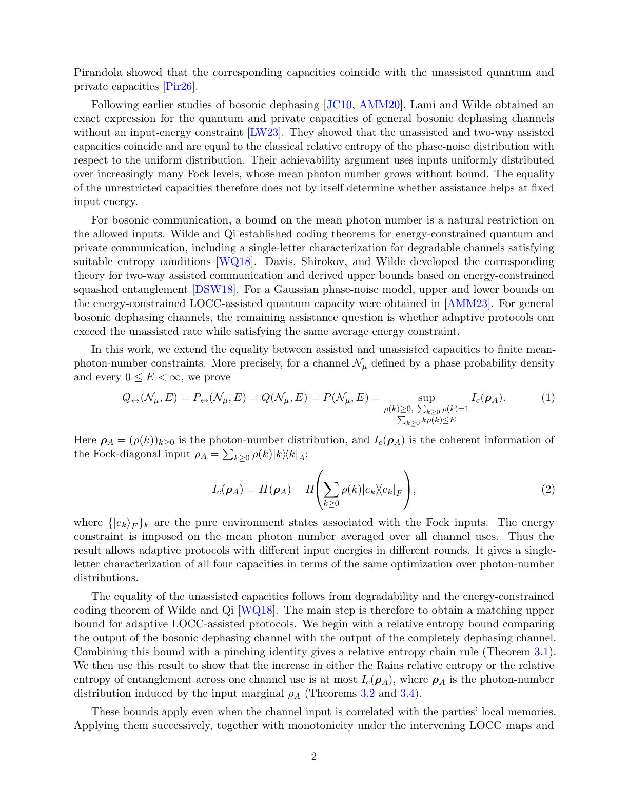
<figcaption class="paper-figure-caption"><b>Fig 1.</b> Low-resolution page preview, page 2</figcaption>
</figure>
<figure class="paper-figure-card">
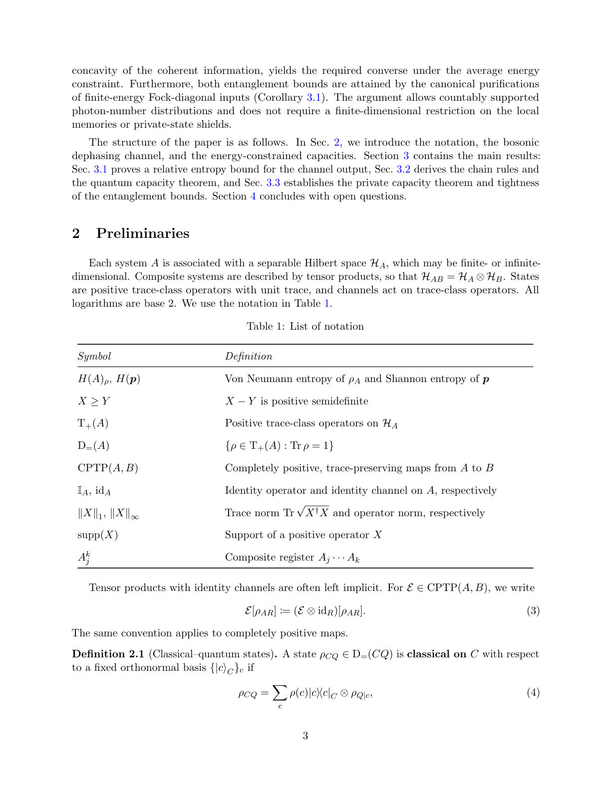
<figcaption class="paper-figure-caption"><b>Fig 2.</b> Low-resolution page preview, page 3</figcaption>
</figure>
<figure class="paper-figure-card">
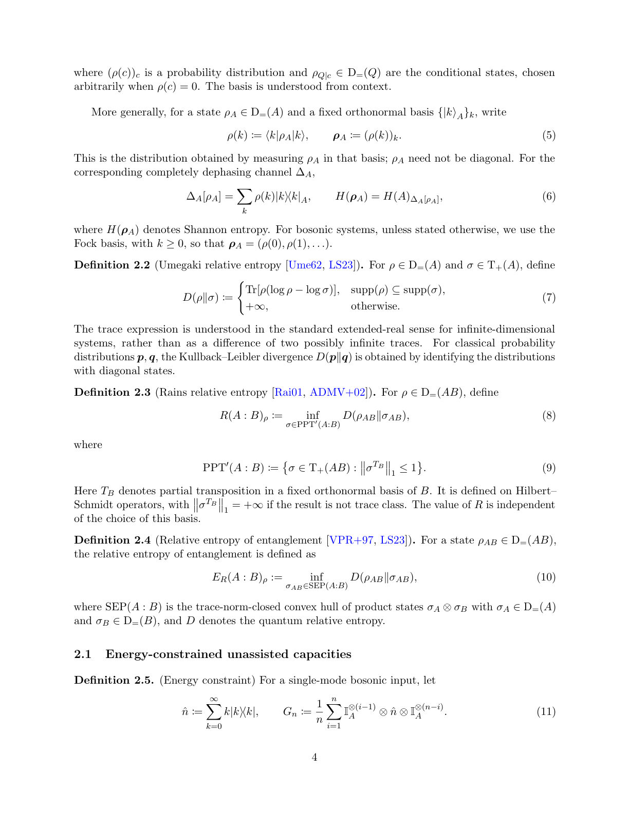
<figcaption class="paper-figure-caption"><b>Fig 3.</b> Low-resolution page preview, page 4</figcaption>
</figure>
<figure class="paper-figure-card">
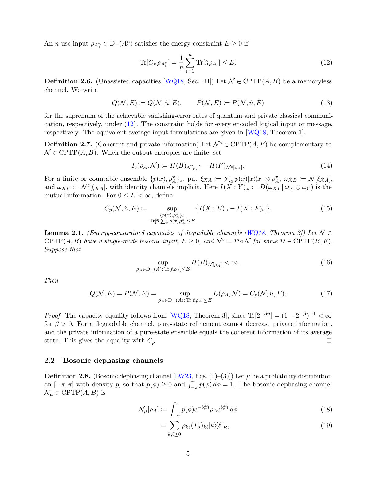
<figcaption class="paper-figure-caption"><b>Fig 4.</b> Low-resolution page preview, page 5</figcaption>
</figure>
<figure class="paper-figure-card">
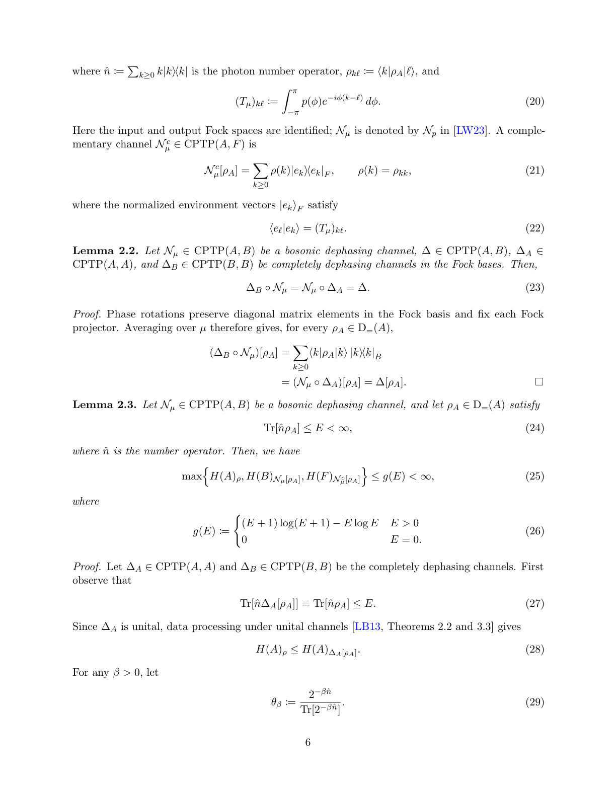
<figcaption class="paper-figure-caption"><b>Fig 5.</b> Low-resolution page preview, page 6</figcaption>
</figure>
</div>

<p><strong>Summary.</strong> This theoretical work proves that for bosonic dephasing channels, the quantum and private communication capacities are robust against classical assistance when an average photon-number constraint is active. The key finding is that these capacities are determined by optimizing the coherent information over constrained Fock-diagonal input states. This establishes a fundamental limit on information transfer in noisy bosonic quantum channels.</p>
<p><strong>Why it may be interesting.</strong> It provides rigorous, quantitative bounds on information transmission rates through realistic noisy bosonic channels, directly impacting the design of quantum communication protocols.</p>
<details>
<summary>Detailed structure</summary>
<p><strong>Main problem.</strong> The paper proves the coincidence of four different communication capacities (quantum, private, and their classically assisted variants) for single-mode bosonic dephasing channels when an average photon-number constraint is imposed.</p>
<p><strong>Main result.</strong> Under the average photon-number constraint, all four capacities are equal to the coherent information optimized over Fock-diagonal input states satisfying that constraint.</p>
<p><strong>Method.</strong> The proof utilizes relative entropy comparisons with the completely dephasing channel to derive chain rules for Rains relative entropy and the relative entropy of entanglement, bounding achievable rates for adaptive protocols.</p>
<p><strong>Model / system.</strong> The system analyzed is a single-mode bosonic dephasing channel acting on bosonic input states, constrained by a finite average photon number E.</p>
<p><strong>Key observables.</strong> Quantum capacity (Q), private capacity (P), coherent information ($I_c$), Rains relative entropy, and relative entropy of entanglement.</p>
<p><strong>Important parameters / regimes.</strong> The average photon-number constraint E, which must be finite.</p>
<p><strong>Assumptions / limitations.</strong> The result holds for any finite constraint E, and the analysis extends to countably supported photon-number distributions.</p>
<p><strong>Paper structure.</strong> The paper establishes the capacity equality by first deriving relative entropy bounds using comparisons with the completely dephasing channel, then applying these bounds to prove the capacity theorems for both quantum and private communication.</p>
</details>
<details>
<summary>Abstract</summary>
<p>We prove that four capacities of single-mode bosonic dephasing channels coincide under an average photon-number constraint: the unassisted quantum capacity, the unassisted private capacity, the two-way classically assisted quantum capacity, and the two-way public-classically assisted private capacity. The assistance may be interactive: the parties can exchange classical messages between channel uses and choose subsequent inputs based on earlier outcomes. For every finite value of the constraint, their common value is the coherent information optimized over Fock-diagonal input states satisfying the constraint. The proof uses a relative entropy comparison with the completely dephasing channel to derive chain rules for the Rains relative entropy and the relative entropy of entanglement. These chain rules give an upper bound on the rates achievable by adaptive protocols whose mean input photon number is constrained on average over all channel uses. We also show that both chain rules are attained by canonical purifications of finite-energy Fock-diagonal states.</p>
</details>
<p><sub><a href="#top">↑ back to top</a></sub></p>

<p><a id="paper-2610.12645"></a></p>
<h3 id="search-for-free-non-abelian-anyons-in-paired-composite-fermion-states"><a href="http://arxiv.org/abs/2610.12645v1">Search for free non-Abelian anyons in paired composite-fermion states</a></h3>
<p><strong>Authors:</strong> Mytraya Gattu, J. K. Jain<br>
<strong>Type:</strong> theory · <strong>Category:</strong> strongly correlated electrons · <strong>PDF:</strong> <a href="https://arxiv.org/pdf/2610.12645v1">https://arxiv.org/pdf/2610.12645v1</a><br>
<strong>Analysis basis:</strong> full PDF text, analyzed in chunks
<strong>Topic relevance:</strong> <code>Keldysh / 2PI / non-Gaussian methods</code> <strong>1/5</strong> · <code>analog quantum simulation</code> <strong>1/5</strong></p>
<div class="figure-strip-hint">↔ Scroll figures horizontally</div>
<div class="paper-figures-scroll">
<figure class="paper-figure-card">
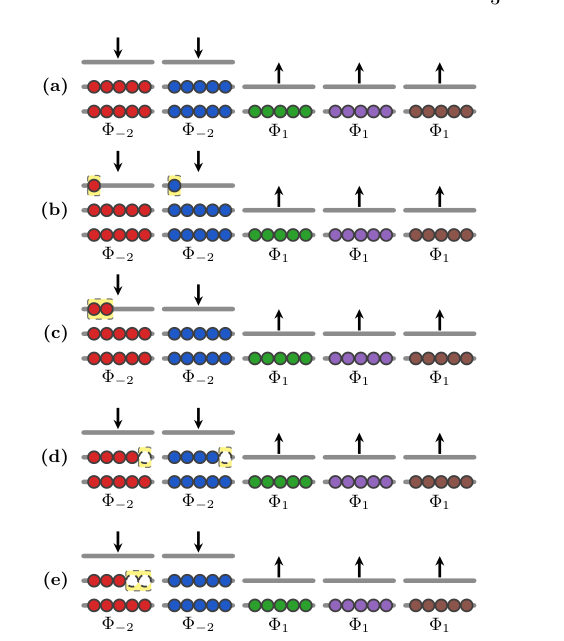
<figcaption class="paper-figure-caption"><b>Fig 1.</b> FIG. 1: Panel (a) schematically depicts the parton ground state Ψ¯2¯2111; the arrow on top shows the magnetic field direction. Panels (b) and (d) show two quasiholes (QHs) and two quasiparticles (QPs) (marked by yellow boxes) in the odd-parity channel, and panels (c) and (e) in the even-parity channel. Note that a QP of the parton with filling factor 2 produces, due to complex conjugation, a QH of the ν = 1/2 state.</figcaption>
</figure>
<figure class="paper-figure-card">
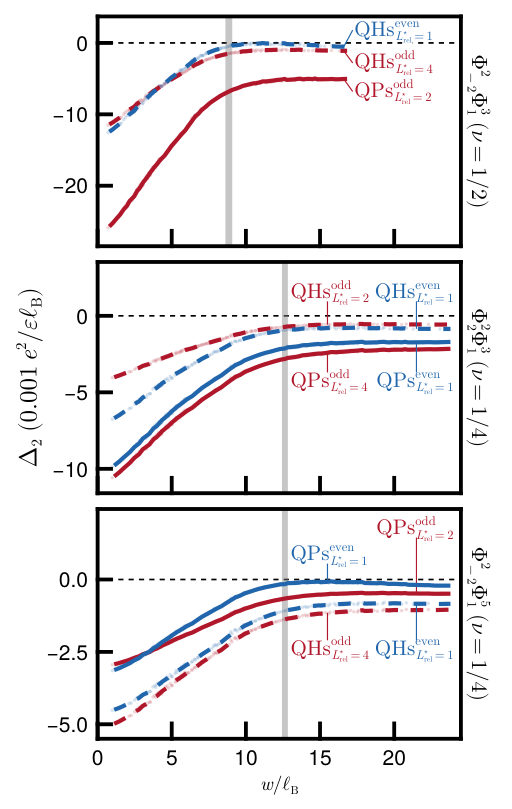
<figcaption class="paper-figure-caption"><b>Fig 2.</b> FIG. 2: Binding energy ∆2 of two quasiholes (dashed) and two quasiparticles (solid) for ¯2213 at ν = 1/2 (top), and 2213 and ¯2215 at ν = 1/4 (middle and bottom), as a function of w/ℓB, for N ∼100 electrons. The width and density dependence approximately collapses onto w/ℓB (Fig. S2). Blue (red) curves show even (odd) channels; L⋆ rel is indicated. Gray bands mark the experimental onset of the fractional quantum Hall effect, obtained from Figs. 3 and 12 of Ref. [19]: w/ℓB = 8.9(2) at ν = 1/2 [17, 20, 60] and w/ℓB ≈12.4–12.8 at ν = 1/4 [18, 33]. Our results are meaningful only to the right of the vertical bands.</figcaption>
</figure>
</div>

<p><strong>Summary.</strong> This theoretical study investigates the stability of quasiparticles in even-denominator fractional quantum Hall states to determine if they exhibit non-Abelian statistics. Using parton theory and numerical simulations, the authors find that binding generally obscures the desired statistics, except for the $\nu=1/2$ state in wide quantum wells, which is proposed as a key platform for realizing non-Abelian anyons.</p>
<p><strong>Why it may be interesting.</strong> This work directly addresses the topological nature of fractional quantum Hall states, which is a cornerstone of strongly correlated electron physics. The search for robust non-Abelian excitations is highly relevant to understanding topological quantum computation.</p>
<details>
<summary>Detailed structure</summary>
<p><strong>Main problem.</strong> The study investigates whether the quasiparticles (QPs) or quasiholes (QHs) in even-denominator fractional quantum Hall (FQH) states bind together, which determines if the state supports non-Abelian braid statistics.</p>
<p><strong>Main result.</strong> Generally, QPs/QHs bind into Abelian molecules, obscuring non-Abelian statistics, with the $\nu=1/2$ state in wide quantum wells being identified as a promising exception where free non-Abelian statistics might exist.</p>
<p><strong>Method.</strong> The authors use the microscopic framework of parton theory, employing the Metropolis-Gibbs-Hastings algorithm to calculate the binding energy of two-particle excitations (QPs/QHs) in the Lowest Landau Level (LLL).</p>
<p><strong>Model / system.</strong> The system is based on even-denominator FQH states, modeled using composite fermions (CFs) and analyzed on the Haldane spherical geometry. The calculations examine various parton representations ($\bar{2}213$, etc.) across different material platforms like wide quantum wells and graphene.</p>
<p><strong>Key observables.</strong> Binding energy ($\Delta^2$), relative angular momentum ($L_{\text{rel}}$), and the existence of free QPs/QHs.</p>
<p><strong>Important parameters / regimes.</strong> Filling factors ($\nu=5/2, 1/2, 1/4$), relative angular momentum channels (odd/even parity), and the ratio of well width to magnetic length ($w/\ell_B$).</p>
<p><strong>Assumptions / limitations.</strong> The analysis neglects Landau Level (LL) mixing and transverse subband mixing when projecting the physics onto the ideal 2D LLL.</p>
<p><strong>Figures summary.</strong> Figures illustrate the binding energy ($\Delta_2$) of two QHs and two QPs across different parton phases and LLs, showing the dependence on $L_{\text{rel}}$ and the relative stability of the bound states.</p>
<p><strong>Paper structure.</strong> The paper systematically constructs the wavefunctions for two-particle excitations in various CF states, calculates the binding energy using numerical methods, and compares the results across different physical regimes (e.g., different LLs or quantum well widths) to pinpoint the conditions for non-Abelian behavior.</p>
</details>
<details>
<summary>Abstract</summary>
<p>The even-denominator fractional quantum Hall (FQH) states, understood as topological superconductors of composite fermions, are predicted to support elementary quasiparticles (QPs) or quasiholes (QHs) obeying non-Abelian braid statistics. Using the microscopic framework of parton theory, we investigate many experimentally observed paired composite-fermion states and find that their elementary QPs and QHs in general bind to form Abelian molecules, thus obscuring non-Abelian braid statistics. An exception is the $ν=1/2$ state in wide quantum wells, where our calculations show free QPs or QHs; we thus identify this state as an especially promising candidate for realizing and studying non-Abelian braid statistics. We also indicate how the study of such bound states can help reveal the topological structure of the state.</p>
</details>
<p><sub><a href="#top">↑ back to top</a></sub></p>

<p><a id="paper-2610.13246"></a></p>
<h3 id="theory-of-exciton-exciton-interactions-in-crystalline-systems"><a href="http://arxiv.org/abs/2610.13246v1">Theory of exciton-exciton interactions in crystalline systems</a></h3>
<p><strong>Authors:</strong> L. Maisel Licerán, H. T. C. Stoof<br>
<strong>Type:</strong> theory · <strong>Category:</strong> strongly correlated electrons · <strong>PDF:</strong> <a href="https://arxiv.org/pdf/2610.13246v1">https://arxiv.org/pdf/2610.13246v1</a><br>
<strong>Analysis basis:</strong> full PDF text, analyzed in chunks
<strong>Topic relevance:</strong> <code>Keldysh / 2PI / non-Gaussian methods</code> <strong>1/5</strong> · <code>analog quantum simulation</code> <strong>1/5</strong></p>
<div class="figure-strip-hint">↔ Scroll figures horizontally</div>
<div class="paper-figures-scroll">
<figure class="paper-figure-card">
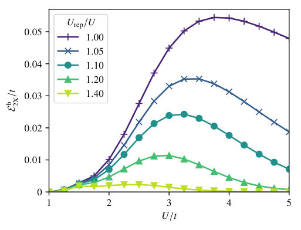
<figcaption class="paper-figure-caption"><b>Fig 1.</b> FIG. 1. Biexciton binding energy Eb 2𝑋for 𝑆e = 0 in a simple 2D square-lattice tight-binding model with the cosine dispersions of Eq. (33) as a function of the ratio 𝑈/𝑡between the interaction and hop- ping strengths. Different curves correspond to different values of the electron–electron and hole–hole repulsion strengths relative to the electron–hole attraction strength. For 𝑈/𝑡≲1 no bound biex- citons appear, and the behavior of Eb 2𝑋is nonmonotonic because the electron–hole attraction competes with the repulsion between identi- cal particles.</figcaption>
</figure>
<figure class="paper-figure-card">
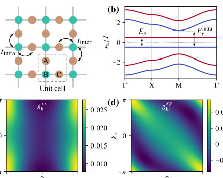
<figcaption class="paper-figure-caption"><b>Fig 2.</b> FIG. 2. Imbalanced Lieb-lattice bilayer model and its associated band structure and quantum metric. The sketch in (a) shows the lattice that models each of the two layers in the system, together with the imbalanced intra- and intercell hopping strengths 𝑡intra = 𝐽(1 + 𝛿) and 𝑡inter = 𝐽(1−𝛿). In (b) we have plotted the dispersion of the three bands within the electron layer (red) and the hole layer (blue) and show the band gaps defined in the main text. The chemical potential lies at zero energy, so that the two flat bands are expected to host most of the excitonic weight as long as 𝐸g ≪𝐸intra g . Finally, (c) and (d) show the quantum-metric components 𝑔𝑥𝑥 𝒌 and 𝑔𝑥𝑦 𝒌, respectively. We have...</figcaption>
</figure>
<figure class="paper-figure-card">
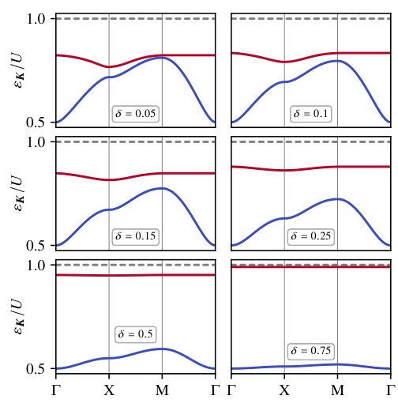
<figcaption class="paper-figure-caption"><b>Fig 3.</b> FIG. 3. Exciton dispersions in the square Lieb-lattice model for different values of 𝛿. The ground-state exciton, shown in blue, has a finite effective mass at the Γ point despite the flatness of the electron and hole bands. The two exciton modes are well separated in energy for 𝛿≳0.1. The grey dashed line marks the electron–hole continuum, which is constant for the flat-band system. The axes are equal in all plots.</figcaption>
</figure>
<figure class="paper-figure-card">
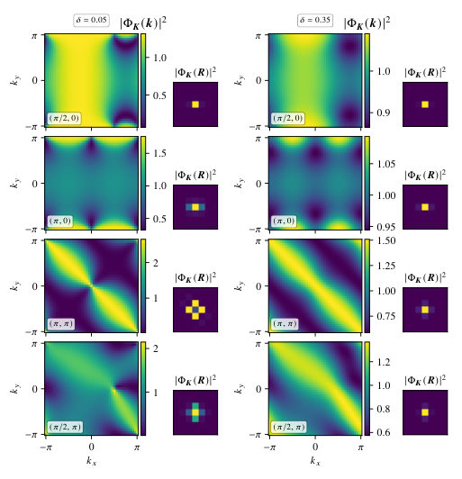
<figcaption class="paper-figure-caption"><b>Fig 4.</b> FIG. 4. Momentum-space probability densities of excitonic states in the square Lieb-lattice model for two different values of 𝛿indicated at the top. The four plots in each column correspond to different total exciton momenta 𝑲, indicated on the bottom left of each plot. The small plots on the side correspond to the position-space probability densities, obtained via Fourier transformation of the momentum- space wave functions. Note that Φ𝑲(𝑹) is defined on the Bravais lattice, so that each square in these plots represents the excitonic weight on one unit cell.</figcaption>
</figure>
<figure class="paper-figure-card">
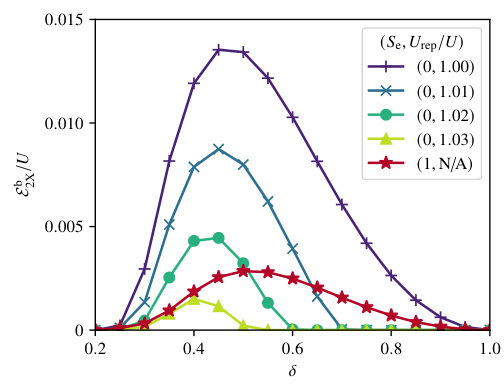
<figcaption class="paper-figure-caption"><b>Fig 5.</b> FIG. 5. Biexciton binding energies Eb 2X in the imbalanced Lieb-lattice model as a function of the dimensionless parameter 𝛿that quantifies the quantum metric of the flat band. The nontrivial quantum metric not only strongly influences the binding energies, but is also able to produce biexciton states in the electronic spin-triplet configuration, which contrasts with the Heitler–London result in conventional sys- tems at this level of approximation. In addition, the binding energy of biexcitons with 𝑆e = 1 is independent of the electron–electron repulsion strength 𝑈rep, making them very stable compared to their counterparts with 𝑆e = 0. All calculations have been performed on a 40 × 40...</figcaption>
</figure>
</div>

<p><strong>Summary.</strong> This paper presents a generalized microscopic theory for exciton-exciton interactions in crystalline semiconductors, moving beyond models restricted to simple materials. It develops the theory from the single-exciton Bethe–Salpeter equation to a full biexciton eigenvalue problem. The resulting framework allows for accurate quantitative predictions of correlated excitonic phases, particularly in systems exhibiting complex band structures like those found in 2D materials.</p>
<p><strong>Why it may be interesting.</strong> The formalism for handling composite quasiparticles (excitons) and extending the interaction theory to incorporate underlying band structure details (quantum geometry) is highly relevant for understanding strongly correlated phases in modern 2D materials.</p>
<details>
<summary>Detailed structure</summary>
<p><strong>Main problem.</strong> Developing a general microscopic theory for exciton-exciton interactions that accounts for the full composite nature of excitons, applicable beyond conventional semiconductors.</p>
<p><strong>Main result.</strong> The theory successfully generalizes previous work to systems with nontrivial quantum geometry, showing that the biexcitonic spectrum strongly depends on these geometric effects.</p>
<p><strong>Method.</strong> The theory builds upon the Bethe–Salpeter equation (BSE) for single excitons and extends it to a generalized eigenvalue problem for biexcitons, resulting in a Schrödinger-like equation.</p>
<p><strong>Model / system.</strong> The study focuses on exciton-exciton interactions in crystalline semiconducting systems, applicable to 2D materials and those exhibiting band topology or moiré effects.</p>
<p><strong>Key observables.</strong> Exciton dispersions, biexciton binding energies, and the biexcitonic spectrum.</p>
<p><strong>Important parameters / regimes.</strong> Band topology, quantum geometry, and the degree of band hybridization.</p>
<p><strong>Assumptions / limitations.</strong> The initial derivation assumes conservation of 'flavors' at the interaction vertex, and the final simplification involves approximations regarding the summation over exciton states.</p>
<p><strong>Paper structure.</strong> The paper progresses from defining the general Hamiltonian and the single-exciton BSE to formulating the complex biexciton eigenvalue problem, simplifying it through symmetry arguments, and finally presenting the resulting Schrödinger-like equation for the biexciton energy.</p>
</details>
<details>
<summary>Abstract</summary>
<p>Excitons are bound electron-hole pairs in semiconductors whose interactions influence optical properties and determine their collective behavior and emergent correlated phases. Despite the theoretical and experimental significance of these phenomena, a microscopic theory of exciton-exciton interactions that takes into account the full composite nature of these quasiparticles is lacking. Here, we present a general theory of exciton-exciton interactions that builds upon our previous publication [Physical Review B 113, 155440 (2026)], which applied only to conventional semiconductors with weak band hybridization. By contrast, the theory presented here is valid in virtually any crystalline semiconducting system and can be applied to the study of biexciton formation and correlated excitonic phases in systems where band topology, quantum geometry, and moiré effects play a significant role. In addition to the analytical theory, we also present results in simple systems with flat bands with a nontrivial quantum metric and show that the biexcitonic spectrum differs strongly from that in the case without quantum geometry. Our theory paves the way for accurate quantitative calculations of biexciton spectra and excitonic many-body phases in modern condensed-matter systems.</p>
</details>
<p><sub><a href="#top">↑ back to top</a></sub></p>

<p><a id="paper-2610.13250"></a></p>
<h3 id="zak-phase-quantization-without-global-symmetry-through-destructive-interference"><a href="http://arxiv.org/abs/2610.13250v1">Zak Phase Quantization without Global Symmetry through Destructive Interference</a></h3>
<p><strong>Authors:</strong> Geonwoo Hwang, Jun-Won Rhim<br>
<strong>Type:</strong> theory · <strong>Category:</strong> other · <strong>PDF:</strong> <a href="https://arxiv.org/pdf/2610.13250v1">https://arxiv.org/pdf/2610.13250v1</a><br>
<strong>Analysis basis:</strong> full PDF text, analyzed in chunks
<strong>Topic relevance:</strong> <code>analog quantum simulation</code> <strong>1/5</strong> · <code>interference shaping light</code> <strong>1/5</strong></p>
<div class="figure-strip-hint">↔ Scroll figures horizontally</div>
<div class="paper-figures-scroll">
<figure class="paper-figure-card">
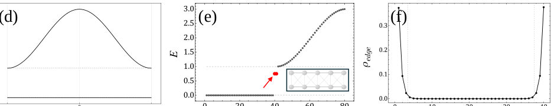
<figcaption class="paper-figure-caption"><b>Fig 1.</b> FIG. 1. Bulk and boundary properties of the two 2 × 2 parent models. Panels (a)–(c) correspond to the Perfect Pythagorean model with (a0, b0, θ, η) = (1, 0, π/4, 1), while panels (d)–(f) correspond to the Imperfect Pythagorean model with (a0, b0, θ, η) = (1, 0.5, π/4, 1). Panels (a,d) show the bulk band structures under periodic boundary conditions, and panels (b,e) show the finite-chain spectra under open boundary conditions, with the in-gap edge modes highlighted in red. The lattice and hopping structures are illustrated in the insets. Panels (c,f) display the real-space probability densities of the corresponding edge modes, demonstrating their localization at the boundaries. In both...</figcaption>
</figure>
<figure class="paper-figure-card">
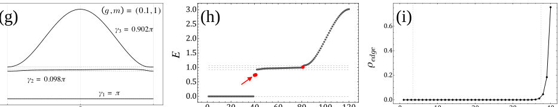
<figcaption class="paper-figure-caption"><b>Fig 2.</b> FIG. 2. Band structure, OBC energy, and edge mode density plot for symmetry broken model. Rows (a)–(c), (d)–(f), and (g)–(i) correspond to the three representative LSS parameter sets (g, m) = (0.1, 0.1), (1, 0.1), (0.1, 1), respectively. Panels (a), (d), and (g) show the three PBC bands, ordered by increasing energy; the horizontal dashed lines mark the adjacent bulk gaps. Panels (b), (e), and (h) show the corresponding spectra of finite open chains. Gray points denote all OBC eigenvalues, whereas red points denote the selected boundary-localized states within the indicated bulk gap. The inset in panel (b) specifies the real-space unit cell and hopping convention used for all calculations....</figcaption>
</figure>
<figure class="paper-figure-card">
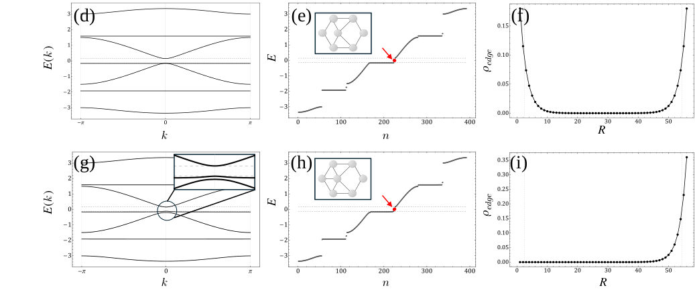
<figcaption class="paper-figure-caption"><b>Fig 3.</b> FIG. 3. Band structures, finite-chain spectra, and boundary-state densities for the parent armchair nanoribbon and its LSS- derived models. Panels (a)–(c), (d)–(f), and (g)–(i) correspond to the reflection-symmetric parent model, the ideal LSS model, and the perturbed LSS model, respectively. Panels (a), (d), and (g) show the PBC band structures over the Brillouin zone k ∈[−π, π]. The inset in panel (g) highlights the weak dispersion of the LSS-derived band induced by the leakage perturbation. Panels (b), (e), and (h) show the corresponding finite-chain spectra under open boundary conditions. Gray points denote all OBC eigenvalues, while red points indicate the selected in-gap...</figcaption>
</figure>
<figure class="paper-figure-card">
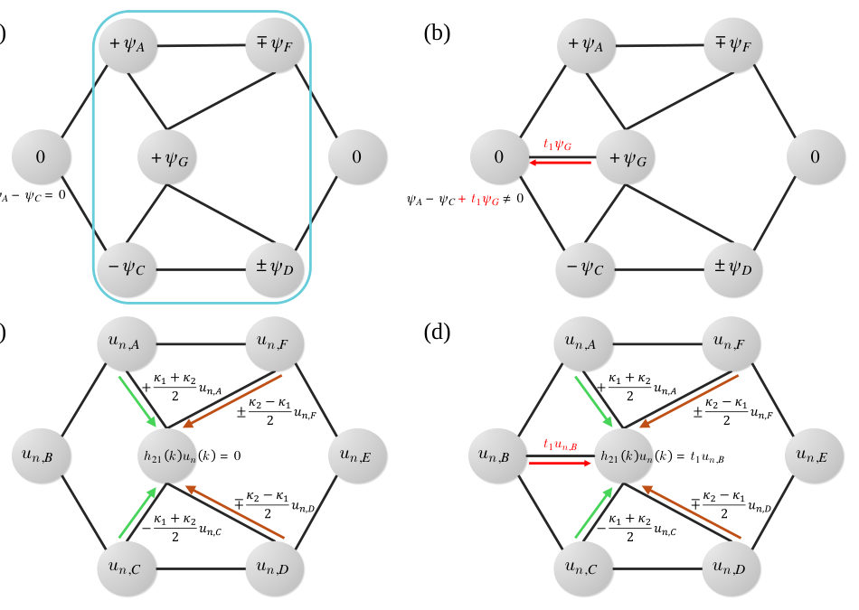
<figcaption class="paper-figure-caption"><b>Fig 4.</b> FIG. 4. Real-space illustration of CLS and the destructive-interference mechanism and their breakdown under a leakage perturbation for t1 ̸= 0 and t2 = 0. (a) In the ideal LSS construction, hopping amplitudes from the parent sector to connector sites B and E cancel by destructive interference, producing nodes at these sites and allowing the flat-sector eigenstates, including their amplitudes on the auxiliary site G, to remain compactly localized within a single unit cell. (b) The additional G–B hopping t1 introduces an uncanceled amplitude t1ψG from G to B, coupling the original flat-band sector to the remaining states. (c) In the ideal LSS construction, hopping amplitudes from the parent...</figcaption>
</figure>
<figure class="paper-figure-card">
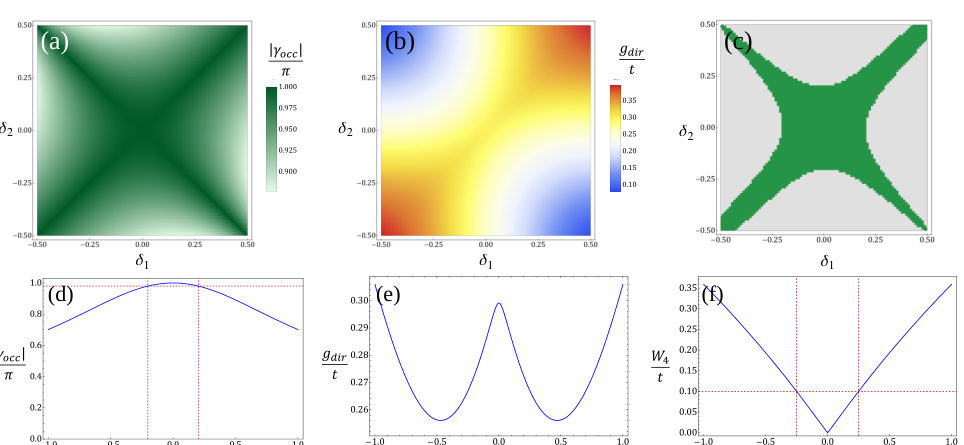
<figcaption class="paper-figure-caption"><b>Fig 5.</b> FIG. 5. Finite-perturbation response in the (δ1, δ2) plane and perturbation response along the cut δ2 = 0. (a) Normalized occupied Zak phase, which remains closest to π near |δ1| ≃|δ2|. (b) Direct occupied gap, enhanced along δ1 ≃δ2 and reduced along δ1 ≃−δ2. (c) Robust region satisfying both |γocc|/π ≥0.98 and gdir/t ≥0.05. (d) Zak phase of the occupied bands as a function of δ1, with the red dashed line marking the criterion |γocc|/π = 0.98. (e) The ratio between the direct gap gdir between the fourth and fifth bands and t. (f) The ratio between the bandwidth of the LSS-derived fourth band, the nearly flat one, and t, with the red dashed line indicating W4/t = 0.10.</figcaption>
</figure>
</div>

<p><strong>Summary.</strong> This work introduces a novel mechanism showing that the quantized Zak phase in 1D electronic systems can be preserved even when the global symmetry responsible for it is explicitly broken. This protection arises from a 'local support symmetry' condition, which forces the relevant wave functions to remain confined to the parent topological sector via destructive interference. The findings establish wave-function support, rather than global symmetry, as the key guarantor of quantized quantum geometry.</p>
<p><strong>Why it may be interesting.</strong> The core concept of protecting topological invariants via local wave-function support rather than global symmetries is highly relevant for designing robust quantum devices in condensed matter or photonics.</p>
<details>
<summary>Detailed structure</summary>
<p><strong>Main problem.</strong> To establish a mechanism for the exact quantization of the Zak phase in 1D band structures without relying on a global symmetry of the full Hamiltonian.</p>
<p><strong>Main result.</strong> The quantization is protected by a local support symmetry condition, which confines the relevant Bloch states to the parent sector via destructive interference.</p>
<p><strong>Method.</strong> The analysis uses the construction of an enlarged Hamiltonian by coupling a parent Hamiltonian to a symmetry-breaking sector, and analyzing the resulting eigenstates using projector formalism.</p>
<p><strong>Model / system.</strong> The study focuses on one-dimensional insulators modeled by an enlarged Bloch Hamiltonian $H(k)$ constructed from a parent Hamiltonian $h_A(k)$ and a symmetry-breaking coupling $W(k)$.</p>
<p><strong>Key observables.</strong> Zak phase ($\gamma$), which is quantized to $\pi$ in the parent model; the persistence of quantized phase despite symmetry breaking.</p>
<p><strong>Important parameters / regimes.</strong> The coupling matrix $W(k)$ and the condition $W^\dagger(k)|u_n(k)
angle = 0$ (Local Support Symmetry).</p>
<p><strong>Assumptions / limitations.</strong> The existence of a parent insulator with a symmetry-quantized Zak phase and the ability to construct a coupling $W(k)$ that enforces the destructive interference condition.</p>
<p><strong>Figures summary.</strong> Figures compare bulk and edge spectra for parent models, confirming the presence of the quantized Zak phase ($\gamma_{occ} = \pi$) in both the 'Perfect' and 'Imperfect Pythagorean' cases.</p>
<p><strong>Paper structure.</strong> The paper develops the argument by first defining the problem (Zak phase quantization without global symmetry), then introducing the LSS condition via the enlarged Hamiltonian, demonstrating the preservation of the phase, and finally analyzing the failure of the mechanism under perturbation.</p>
</details>
<details>
<summary>Abstract</summary>
<p>The Zak phase provides a fundamental geometric characterization of one-dimensional band structures and, when quantized by symmetry, serves as a bulk indicator of polarization and boundary phenomena. Conventionally, its exact quantization is tied to a global symmetry of the Bloch Hamiltonian, such as inversion or reflection symmetry. Here, we demonstrate a distinct mechanism by which the Zak phase remains exactly quantized even when the corresponding protecting symmetry is explicitly broken at the level of the full Hamiltonian. The mechanism is based on local support symmetry and destructive interference: symmetry-breaking degrees of freedom are coupled to a topological parent system in such a way that the relevant Bloch states cannot leak into them. The preserved states therefore retain their parent wave functions and inherit their quantized Zak phase exactly, despite the absence of the protecting global symmetry. We establish this mechanism for general one-dimensional insulators and demonstrate it in an inversion-broken minimal model and a reflection-broken armchair nanoribbon, where a quantized $π$ Zak phase and associated boundary-localized states persist. We further show that perturbations violating the exact destructive-interference condition continuously dequantize the Zak phase, while a finite regime with a near-$π$ Zak phase and boundary response can survive. Our results establish wave-function support, rather than global symmetry alone, as a mechanism for protecting quantized quantum geometry in one-dimensional systems.</p>
</details>
<p><sub><a href="#top">↑ back to top</a></sub></p>

<p><a id="paper-2610.12664"></a></p>
<h3 id="a-catalytic-algorithm-for-transposing-unknown-qutrit-unitaries-with-tight-query-bounds"><a href="http://arxiv.org/abs/2610.12664v1">A Catalytic Algorithm for Transposing Unknown Qutrit Unitaries with Tight Query Bounds</a></h3>
<p><strong>Authors:</strong> Yu-Ao Chen<br>
<strong>Type:</strong> theory · <strong>Category:</strong> quantum information and computing · <strong>PDF:</strong> <a href="https://arxiv.org/pdf/2610.12664v1">https://arxiv.org/pdf/2610.12664v1</a><br>
<strong>Analysis basis:</strong> full PDF text, analyzed in chunks
<strong>Topic relevance:</strong> <code>quantum measurements</code> <strong>1/5</strong></p>
<div class="figure-strip-hint">↔ Scroll figures horizontally</div>
<div class="paper-figures-scroll">
<figure class="paper-figure-card">
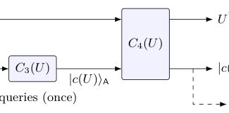
<figcaption class="paper-figure-caption"><b>Fig 1.</b> FIG. 1. An exact reusable catalyst. Three forward queries prepare |c(U)⟩A from the known memory state |0⟩A; each four- query circuit returns it in a product with the output state. The returned catalyst is ready for reuse.</figcaption>
</figure>
</div>

<p><strong>Summary.</strong> This paper develops exact, deterministic quantum circuits to transpose and invert an unknown qutrit unitary using minimal forward queries. By employing catalytic techniques, the authors not only construct these efficient circuits but also rigorously prove that the achieved query counts meet the theoretical lower bounds for $SU(3)$. This work advances the understanding of resource quantification in quantum information processing.</p>
<p><strong>Why it may be interesting.</strong> It provides rigorous, resource-constrained quantum circuit design for fundamental unitary operations (transpose/inverse) on higher-dimensional quantum systems (qutrits), which is crucial for understanding the limits of quantum computation.</p>
<details>
<summary>Detailed structure</summary>
<p><strong>Main problem.</strong> The paper focuses on constructing and analyzing the minimum resource cost (query count) required to deterministically transpose and invert an unknown qutrit unitary $U \in SU(3)$ using only forward queries.</p>
<p><strong>Main result.</strong> The authors construct catalytic circuits that achieve the established lower bounds for processing queries ($q^	op=4$ and $q^\dagger=8$ for $d=3$) and also determine the minimum preparation query cost ($p \ge 3$) for transposition.</p>
<p><strong>Method.</strong> The analysis uses techniques involving the differentiation of circuit responses, positivity constraints on the Choi matrix, and deriving functional identities ($\Lambda_f(U, H) = g_U(H) + \alpha_U(H)I$) to establish lower bounds.</p>
<p><strong>Model / system.</strong> The system involves an unknown unitary $U$ acting on a qutrit ($d=3$). The protocol is catalytic, meaning it reuses an ancillary 'catalyst' state prepared independently of the input state.</p>
<p><strong>Key observables.</strong> Query counts (preparation and processing), the minimum required dimension of the ancillary state ($M_{min}$), and the resulting transformation fidelity.</p>
<p><strong>Important parameters / regimes.</strong> The dimension $d$ of the unitary group ($d=3$ for qutrits), and the number of queries $m$ for repeated use.</p>
<p><strong>Assumptions / limitations.</strong> The protocols assume a fixed causal order and utilize forward queries only. The analysis relies on specific mathematical tools like tensor-Hom duality and positivity constraints.</p>
<p><strong>Figures summary.</strong> Figures illustrate the reusable catalyst circuit for transposition (3 preparation queries, 4 processing queries per use) and the circuit structure for exact catalytic inversion.</p>
<p><strong>Paper structure.</strong> The paper establishes lower bounds using functional analysis and positivity constraints, then constructs explicit circuits (for $d=3$) that match these bounds, detailing the preparation and processing steps for both transposition and inversion.</p>
</details>
<details>
<summary>Abstract</summary>
<p>We construct exact deterministic circuits for transposing and inverting an unknown qutrit unitary $U\in\mathrm{SU}(3)$ using only forward queries. Three queries prepare a catalyst independently of the input state. Four further queries implement transposition while returning the catalyst unchanged and uncorrelated with the output. Two uses within an antisymmetric encoding implement inversion with eight processing queries and return the same catalyst. Reusing the catalyst implements $m$ transpositions or inversions with $3+4m$ or $3+8m$ total queries, respectively. More generally, we prove that exact transposition and inversion of an unknown $U\in\mathrm{SU}(d)$, $d\ge2$, require at least $d+1$ and $d^2-1$ processing queries, respectively, in fixed causal order. These processing bounds hold for any program state prepared independently of the input state using finitely many forward queries, even if that state is consumed during processing. Both our catalytic qutrit algorithms attain their respective bounds. Moreover, exact qutrit transposition with four processing queries requires at least three preparation queries, and our construction attains this bound.</p>
</details>
<p><sub><a href="#top">↑ back to top</a></sub></p>

<p><a id="paper-2610.12724"></a></p>
<h3 id="an-elementary-approach-to-the-szego-theorems"><a href="http://arxiv.org/abs/2610.12724v1">An elementary approach to the Szegő theorems</a></h3>
<p><strong>Authors:</strong> Israel Klich, Ravisankar Rajagopal<br>
<strong>Type:</strong> theory · <strong>Category:</strong> statistical mechanics · <strong>PDF:</strong> <a href="https://arxiv.org/pdf/2610.12724v1">https://arxiv.org/pdf/2610.12724v1</a><br>
<strong>Analysis basis:</strong> full PDF text, analyzed in chunks
<strong>Topic relevance:</strong> <code>analog quantum simulation</code> <strong>1/5</strong></p>
<div class="figure-strip-hint">↔ Scroll figures horizontally</div>
<div class="paper-figures-scroll">
<figure class="paper-figure-card">
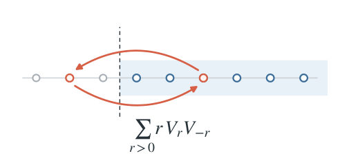
<figcaption class="paper-figure-caption"><b>Fig 1.</b> Figure 1: Origin of the strong Szeg˝o correction term: For a jump of length r ≤N, exactly r starting sites near each endpoint allow the path to leave the interval and return.</figcaption>
</figure>
<figure class="paper-figure-card">
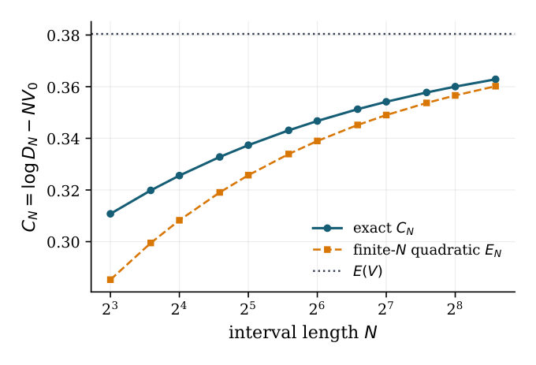
<figcaption class="paper-figure-caption"><b>Fig 2.</b> Figure 2: Slow but sufficient algebraic decay. Both the exact boundary correction CN and the finite-N quadratic expression EN(V ) approach the strong Szeg˝o constant. Their convergence is slow because p = 1.2 lies close to the borderline value p = 1.</figcaption>
</figure>
<figure class="paper-figure-card">
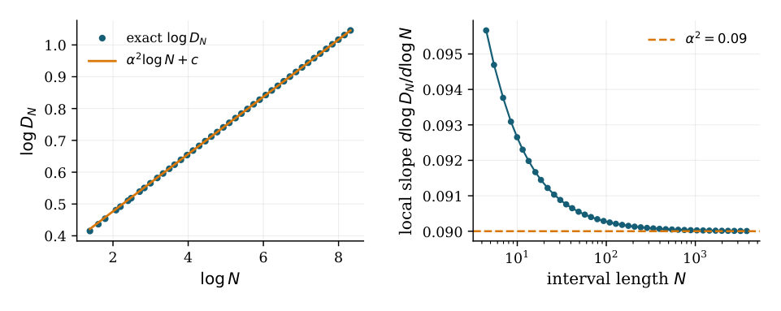
<figcaption class="paper-figure-caption"><b>Fig 3.</b> Figure 3: Logarithmic growth for the borderline coefficients Vr = α/r. The left panel plots the exact determinant against log N. The right panel shows the local slope approaching the predicted coefficient α2 = 0.09.</figcaption>
</figure>
<figure class="paper-figure-card">
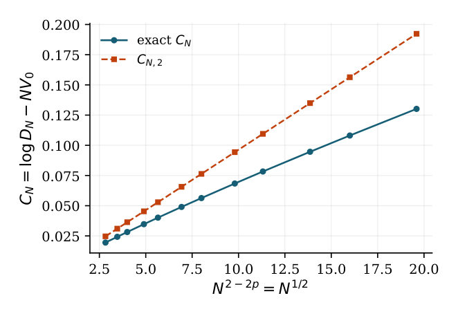
<figcaption class="paper-figure-caption"><b>Fig 4.</b> Figure 4: Example with decay slower than the borderline. For p = 0.75, the quadratic boundary sum grows as N1/2. The exact correction displays the same power-law growth over the accessible range but differs visibly from the quadratic expression, showing that higher-order boundary processes are no longer negligible.</figcaption>
</figure>
<figure class="paper-figure-card">
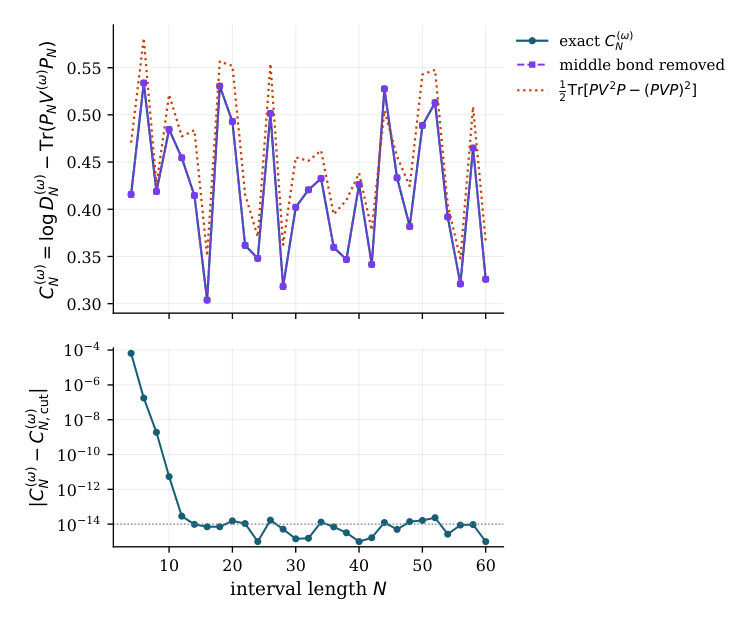
<figcaption class="paper-figure-caption"><b>Fig 5.</b> Figure 5: One fixed disorder realization. The correction for the full interval is indistinguishable from the direct sum obtained by removing the middle bond once the two edges are sufficiently far apart. The lower panel displays the rapidly decreasing decoupling error. The quadratic contribution 1 2 Tr  PNV 2PN −(PNV PN)2 remains only an approximation.</figcaption>
</figure>
</div>

<p><strong>Summary.</strong> This paper provides an elementary derivation of the strong Szegő theorem for Toeplitz determinants, interpreting the asymptotic correction as arising from boundary leakage paths. By developing this physical picture, the authors offer an intuitive understanding of spectral determinants that has implications for disordered systems and quantum correlation functions.</p>
<p><strong>Why it may be interesting.</strong> The physical interpretation of the boundary correction via path counting and the free-fermion analogy provides a deep, intuitive understanding of spectral properties of operators relevant to quantum many-body systems.</p>
<details>
<summary>Detailed structure</summary>
<p><strong>Main problem.</strong> The paper aims to derive the strong Szegő theorem and the Fisher-Hartwig formula for the asymptotic behavior of determinants of Toeplitz matrices in an elementary and intuitive manner.</p>
<p><strong>Main result.</strong> The strong Szegő correction term is shown to arise physically from 'boundary leakage' paths, leading to a rigorous and elementary derivation of the established asymptotic formula.</p>
<p><strong>Method.</strong> The derivation uses an elementary approach based on path counting, analyzing the boundary contributions of the matrix exponential, and employing complementary free-fermion arguments.</p>
<p><strong>Model / system.</strong> The model involves Toeplitz matrices $T_N(f)$ whose entries depend only on the difference of indices, arising in contexts like partition functions or correlation functions in statistical mechanics.</p>
<p><strong>Key observables.</strong> The logarithm of the determinant, $\log D_N(f)$, and the specific asymptotic correction term $\sum_{r>0} r V_r V_{-r}$.</p>
<p><strong>Important parameters / regimes.</strong> The size of the finite region ($N$), the decay rate of the Fourier coefficients ($V_r$), and the boundary conditions (isolated vs. two boundaries).</p>
<p><strong>Assumptions / limitations.</strong> The initial analysis assumes finite-range interactions, though the method is shown to be robust and extendable to slowly decaying or disordered potentials.</p>
<p><strong>Paper structure.</strong> The paper builds from the established weak Szegő theorem to the strong Szegő theorem, developing the core idea through boundary leakage analysis, confirming the result via a free-fermion argument, and discussing extensions to disordered and higher-dimensional systems.</p>
</details>
<details>
<summary>Abstract</summary>
<p>The strong Szegő theorem and the Fisher-Hartwig formula describe the asymptotic behavior of determinants obtained by restricting translationally invariant operators to large finite regions. In particular, Szegő's theorem states that, beyond the leading extensive contribution to such a determinant, there is a universal finite correction, $\sum_{r>0} rV_rV_{-r}$ where $V_r$ are the Fourier coefficients of the logarithm of the symbol. Although this formula appears throughout analysis and mathematical physics, the origin of its quadratic form and of the weight $r$ is often obscured in its standard analytic derivations. We develop an elementary picture in which the strong Szegő term arises from boundary leakage: paths contributing to the matrix exponential leave the finite interval and subsequently return. Counting the shortest such excursions immediately produces the factor $r$. We then show that an isolated boundary contributes exactly one half of the strong Szegő correction, while the two boundaries of a long interval decouple. For finite-range matrices this gives a rigorous and intuitive elementary derivation of the asymptotics, with extensions to sufficiently rapidly decaying interactions. A complementary free-fermion argument provides a physical interpretation of the same cancellation mechanism. Numerical examples illustrate the asymtotics in the well controlled regime, the Fisher Hartwig logarithmic correction. The boundary formulation does not itself require translation invariance and therefore suggests natural extensions to disordered systems, higher dimensions, and symbols with internal matrix structure. To illustrate this we numerically go beyond the formal applicability region of the Szegő formula, considering slow decay and disordered cases, and showing in some cases a robustness of the approach even for slowly decaying but disordered potentials.</p>
</details>
<p><sub><a href="#top">↑ back to top</a></sub></p>

<p><a id="paper-2610.13694"></a></p>
<h3 id="qtn-rqnn-quantum-tensor-network-based-recurrent-quantum-neural-network"><a href="http://arxiv.org/abs/2610.13694v1">QTN-RQNN: Quantum Tensor Network-Based Recurrent Quantum Neural Network</a></h3>
<p><strong>Authors:</strong> Amit S. Patel, Himanshu R. Patel, Bikash K. Behera, Pranav Mehta, Ghanshyam Tejani, Deepak Parashar<br>
<strong>Type:</strong> both · <strong>Category:</strong> quantum information and computing · <strong>PDF:</strong> <a href="https://arxiv.org/pdf/2610.13694v1">https://arxiv.org/pdf/2610.13694v1</a><br>
<strong>Analysis basis:</strong> full PDF text, analyzed in chunks
<strong>Topic relevance:</strong> <code>methods for driven-dissipative</code> <strong>1/5</strong></p>
<div class="figure-strip-hint">↔ Scroll figures horizontally</div>
<div class="paper-figures-scroll">
<figure class="paper-figure-card">
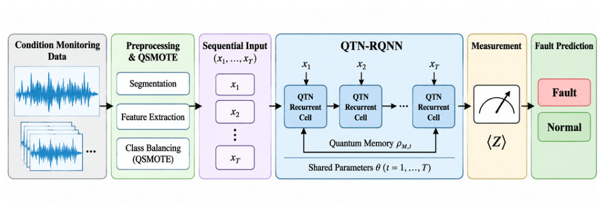
<figcaption class="paper-figure-caption"><b>Fig 1.</b> Fig. 1: Compact overview of the proposed QTN-RQNN framework. Preprocessed and QSMOTE-balanced features are processed sequentially by shared QTN-based recurrent cells while quantum memory is propagated across recurrent steps. Final measurements are used for fault classification.</figcaption>
</figure>
<figure class="paper-figure-card">

<figcaption class="paper-figure-caption"><b>Fig 2.</b> Fig. 2: Circuit-level structure of the proposed QTN-RQNN. Qubits q0 and q1 encode the current feature segment through RY (πxt,1) and RY (πxt,2), while q2 and q3 form the recurrent quantum-memory register. Each QTN layer applies trainable RY and RZ rotations followed by parameterized nearest-neighbor RZZ interactions on (q0, q1), (q2, q3), and (q1, q2). After L layers, the input subsystem is traced out and the resulting memory state ρM,t is propagated to the next recurrent step. The same QTN parameters are reused for t = 1, . . . , T. After the final step, local Z measurements of the memory qubits are supplied to a classical sigmoid output layer.</figcaption>
</figure>
<figure class="paper-figure-card">

<figcaption class="paper-figure-caption"><b>Fig 3.</b> Fig. 3: Threshold-independent discrimination performance of QTN-RQNN across the four datasets. The first row presents the ROC curves for (a) SPID, (b) CWRUBD, (c) EFDD, and (d) SFDD, while the second row presents the corresponding precision-recall (PR) curves for (e) SPID, (f) CWRUBD, (g) EFDD, and (h) SFDD.</figcaption>
</figure>
<figure class="paper-figure-card">

<figcaption class="paper-figure-caption"><b>Fig 4.</b> Fig. 4: Effect of the number of recurrent timesteps T on QTN-RQNN for (a) SPID, (b) CWRUBD, (c) EFDD, and (d) SFDD.</figcaption>
</figure>
<figure class="paper-figure-card">

<figcaption class="paper-figure-caption"><b>Fig 5.</b> Fig. 5: Effect of QTN circuit depth L on QTN-RQNN for (a) SPID, (b) CWRUBD, (c) EFDD, and (d) SFDD.</figcaption>
</figure>
</div>

<p><strong>Summary.</strong> This paper introduces QTN-RQNN, a novel recurrent quantum neural network that incorporates tensor-network structures to enhance efficiency for quantum machine learning tasks like fault diagnosis. By integrating structured local interactions and optimizing resource usage, it achieves state-of-the-art performance on specific datasets while significantly reducing required quantum gates compared to existing recurrent quantum models.</p>
<p><strong>Why it may be interesting.</strong> The work directly addresses the resource limitations of NISQ devices by proposing a structured, resource-efficient quantum architecture for a practical ML task, which is highly relevant to quantum algorithm development.</p>
<details>
<summary>Detailed structure</summary>
<p><strong>Main problem.</strong> Developing resource-conscious quantum architectures for Quantum Machine Learning (QML) to perform fault-diagnosis on noisy intermediate-scale quantum (NISQ) devices using imbalanced and heterogeneous data.</p>
<p><strong>Main result.</strong> The proposed QTN-RQNN significantly improves classification performance on the SPID dataset while achieving a 25% reduction in two-qubit gate count compared to baseline recurrent models.</p>
<p><strong>Method.</strong> The authors propose QTN-RQNN, which integrates tensor-network-inspired nearest-neighbor interactions into a recurrent quantum processing unit, utilizing QSMOTE for class balancing.</p>
<p><strong>Model / system.</strong> The model is a Quantum Tensor Network-Based Recurrent Quantum Neural Network. It processes sequential data by encoding input features into a quantum state and propagating the memory state across recurrent steps using a structured unitary operation.</p>
<p><strong>Key observables.</strong> F1-score, ROC-AUC, two-qubit-gate count, and the final readout vector $z = [\langle Z\otimes I
angle, \langle I\otimes Z
angle]^	op$.</p>
<p><strong>Important parameters / regimes.</strong> The trainable parameters $\Theta = [	heta, w_0, w_1, b]$ govern the network's evolution and final classification layer.</p>
<p><strong>Assumptions / limitations.</strong> The performance is dataset-dependent, and the study emphasizes the necessity of jointly considering predictive performance and circuit-resource requirements for near-term quantum applications.</p>
<p><strong>Figures summary.</strong> Figures illustrate the compact overview of the QTN-RQNN architecture and its circuit-level structure, detailing input encoding and memory propagation.</p>
<p><strong>Paper structure.</strong> The paper details the entire pipeline: data preprocessing (PCA, scaling), class balancing (QSMOTE), defining the recurrent input state, parameterizing the QTN-structured unitary ($U_{QTN}$), updating the reduced memory state via partial trace, and finally, optimizing the readout using a classical sigmoid layer.</p>
</details>
<details>
<summary>Abstract</summary>
<p>Resource constraints and imperfect quantum operations remain major challenges for quantum machine learning (QML) on noisy intermediate-scale quantum (NISQ) devices, particularly for fault-diagnosis tasks involving imbalanced and heterogeneous data. This work proposes QTN-RQNN, a Quantum Tensor Network-Based Recurrent Quantum Neural Network that integrates tensor-network-inspired nearest-neighbor interactions with recurrent quantum processing. The model sequentially encodes input features while propagating quantum memory across recurrent steps and incorporates QSMOTE for class balancing. QTN-RQNN is evaluated on four heterogeneous fault-diagnosis datasets SPID, CWRUBD, EFDD, and SFDD and compared with QNN, QTN-QNN, and RQNN baselines through classification, ablation, multi-seed, convergence, and quantum-resource analyses. Results show dataset-dependent predictive behavior, indicating that increased quantum architectural complexity does not universally improve classification. On SPID, QTN-RQNN improves the RQNN F1-score from 0.3077 to 0.4516 and ROC-AUC from 0.4485 to 0.6970, while the remaining datasets exhibit different performance-resource trade-offs and sensitivity to recurrent timesteps and circuit depth. Across all datasets, QTN-RQNN reduces the two-qubit-gate count from 32 to 24 per sample relative to RQNN, corresponding to a 25% reduction without increasing the four-qubit requirement; the same relative reduction is obtained for QTN-QNN over QNN. These findings establish QTN-RQNN as a resource-conscious recurrent quantum architecture and highlight the need to jointly consider predictive performance and circuit-resource requirements for near-term quantum fault diagnosis.</p>
</details>
<p><sub><a href="#top">↑ back to top</a></sub></p>

<p><a id="paper-2610.13906"></a></p>
<h3 id="quantum-query-complexity-of-maximum-degree-and-its-generalizations"><a href="http://arxiv.org/abs/2610.13906v1">Quantum Query Complexity of Maximum Degree and its Generalizations</a></h3>
<p><strong>Authors:</strong> Amin Shiraz Gilani, Nikhil S. Mande, Subhasree Patro, Nithish Raja<br>
<strong>Type:</strong> theory · <strong>Category:</strong> quantum information and computing · <strong>PDF:</strong> <a href="https://arxiv.org/pdf/2610.13906v1">https://arxiv.org/pdf/2610.13906v1</a><br>
<strong>Analysis basis:</strong> full PDF text, analyzed in chunks
<strong>Topic relevance:</strong> <code>quantum measurements</code> <strong>1/5</strong></p>
<div class="figure-strip-hint">↔ Scroll figures horizontally</div>
<div class="paper-figures-scroll">
<figure class="paper-figure-card">

<figcaption class="paper-figure-caption"><b>Fig 1.</b> Figure 1: Construction of the tournament Tx from an input x = (x(1), . . . , x(m)) to ORm ◦PrMajm. The orientations inside L form a fixed regular tournament, so every vertex of L has out-degree m within L. The orientations inside R, and between p and R, are fixed so that every vj has out-degree m/2 within R ∪{p}. The orientations of the dashed edges (i.e., the edges between vj and {ui, ¯ui}) depend on x(i) j . Specifically, if x(i) j = 1 then set ui →vj →¯ui, and if x(i) j = 0 then set ¯ui →vj →ui. Thus, deg+ Tx(ui) = m+wt(x(i)) and deg+ Tx(¯ui) = m+(m−wt(x(i))). Consequently, ∆+(Tx) = 3m/2 if (ORm ◦PrMajm)(x) = 0, and ∆+(Tx) = 3m/2 + 1 if (ORm ◦PrMajm)(x) = 1.</figcaption>
</figure>
<figure class="paper-figure-card">

<figcaption class="paper-figure-caption"><b>Fig 2.</b> Figure 2: Construction of the graph Gx from an input x = (x(1), . . . , x(m)) to ORm ◦PrMajm. The set L induces a fixed clique, while R induces a fixed independent set. The dotted edges (i.e., the edges between ui and vj) depend on x(i) j . Specifically, {ui, vj} is an edge if and only if x(i) j = 1. Thus, degGx(ui) = m −1 + wt(x(i)). Consequently, ∆(Gx) = 3m/2 −1 if (ORm ◦PrMajm)(x) = 0, and ∆(Gx) = 3m/2 if (ORm ◦PrMajm)(x) = 1.</figcaption>
</figure>
<figure class="paper-figure-card">

<figcaption class="paper-figure-caption"><b>Fig 3.</b> Figure 3: Construction of the graph Hx from an input x = (xv)v∈V to GCG k ◦PrMajn. The graph Hx has vertex set V ⊔L ⊔R, where L = {u1, . . . , un} and R = {w1, . . . , wn}. Inside V , we place the complement graph ¯G. For every i, j ∈[n], we add the edge {vi, uj} if and only if either i = j or {vi, vj} ∈E(G). Finally, for every i, j ∈[n], we add the edge {vi, wj} if and only if xvi[j] = 1. Consequently, every vertex vi ∈V has degree n + wt(xvi) ∈{3n/2, 3n/2 + 1}.</figcaption>
</figure>
</div>

<p><strong>Summary.</strong> This paper rigorously analyzes the quantum query complexity for several core graph problems, including finding the maximum degree and solving the MaxCut problem. It establishes that finding the maximum degree requires $\Theta(n^{3/2})$ queries, and provides detailed upper and lower bounds for the MaxCut problem, showing its computational hardness relative to degree computation.</p>
<p><strong>Why it may be interesting.</strong> While the focus is on graph theory complexity, the techniques used—establishing lower bounds via reductions and deriving optimal quantum algorithms—are foundational to quantum information theory and quantum algorithm design.</p>
<details>
<summary>Detailed structure</summary>
<p><strong>Main problem.</strong> The paper studies the quantum query complexity of fundamental graph problems, such as finding the maximum degree vertex and solving the Maximum (k, n-k)-Cut problem.</p>
<p><strong>Main result.</strong> It establishes tight quantum query bounds, showing that finding the maximum degree requires $\Theta(n^{3/2})$ queries, and deriving upper and lower bounds for the MaxCut problem that depend on the size of the cut set $k$.</p>
<p><strong>Method.</strong> The authors use quantum query complexity theory, employing techniques like reductions from known hard problems (e.g., graph collision) to establish lower bounds, and quantum maximum finding algorithms for upper bounds.</p>
<p><strong>Model / system.</strong> The underlying model is graph theory, where the quantum query access is modeled via the adjacency matrix of the graph. The analysis focuses on the computational complexity of graph properties.</p>
<p><strong>Key observables.</strong> Quantum query complexity $Q(\cdot)$, maximum degree $\Delta(G)$, and the size of the maximum $k$-cut $    ext{MaxCut}_{k,n}(G)$.</p>
<p><strong>Important parameters / regimes.</strong> The graph size $n$, the cut set size $k$, and the exponent $3/2$ are critical parameters determining the complexity bounds.</p>
<p><strong>Assumptions / limitations.</strong> The tight upper bound for $  ext{MaxCut}_{k,n}$ is conditional on a conjecture regarding $k$-Graph Collision ($  ext{GCG}_k$).</p>
<p><strong>Figures summary.</strong> Figure 1 illustrates the construction of a tournament used to model a complex Boolean problem. Figure 2 shows the construction of a graph $G_x$ used to model the $  ext{OR}_m \circ     ext{PrMaj}_m$ problem.</p>
<p><strong>Paper structure.</strong> The paper proceeds by first establishing the $\Theta(n^{3/2})$ bounds for maximum degree/out-degree. It then tackles the MaxCut problem, deriving upper bounds using quantum maximum finding and establishing lower bounds via reductions from $k$-Graph Collision.</p>
</details>
<details>
<summary>Abstract</summary>
<p>We study the quantum query complexity of several basic graph problems. 1) We prove a tight $Θ(n^{3/2})$ bound for finding a maximum-out-degree vertex in an $n$-vertex tournament, resolving a conjecture of Mande, Paraashar, and Saurabh [FSTTCS'23]. 2) Using the same proof idea, we give a direct proof that finding a maximum-degree vertex in an $n$-vertex undirected graph requires $Θ(n^{3/2})$ quantum queries, a bound implicit in the work of Apers and Lee [CCC'21]. Both lower bounds above hold even for computing only the maximum degree or maximum out-degree. 3) We also study Maximum $(k,n-k)$-Cut, which asks for the largest cut with one side of size $k$. For every constant $k\geq 1$, we give an $O(n^{2-1/(k+1)})$-query quantum algorithm. 4) We establish a reduction to Maximum $(k,n-k)$-Cut involving $k$-Graph Collision, which asks whether the marked vertices of a known graph contain a $k$-clique. For $k\geq 3$, this yields unconditional lower bounds with exponents strictly larger than $3/2$, showing that this problem is strictly harder than computing maximum degree. Additionally, under a conjecture we propose for $k$-Graph Collision, the reduction yields a lower bound matching our upper bound above.</p>
</details>
<p><sub><a href="#top">↑ back to top</a></sub></p>

<p><a id="paper-2610.12949"></a></p>
<h3 id="quantum-assisted-rendezvous-on-hypercubes-a-quantum-bernoulli-noise-approach"><a href="http://arxiv.org/abs/2610.12949v1">Quantum-assisted rendezvous on hypercubes: a quantum Bernoulli noise approach</a></h3>
<p><strong>Authors:</strong> Ce Wang<br>
<strong>Type:</strong> theory · <strong>Category:</strong> quantum information and computing · <strong>PDF:</strong> <a href="https://arxiv.org/pdf/2610.12949v1">https://arxiv.org/pdf/2610.12949v1</a><br>
<strong>Analysis basis:</strong> full PDF text, analyzed in chunks
<strong>Topic relevance:</strong> <code>quantum measurements</code> <strong>1/5</strong></p>
<div class="figure-strip-hint">↔ Scroll figures horizontally</div>
<div class="paper-figures-scroll">
<figure class="paper-figure-card">

<figcaption class="paper-figure-caption"><b>Fig 1.</b> Low-resolution page preview, page 2</figcaption>
</figure>
<figure class="paper-figure-card">

<figcaption class="paper-figure-caption"><b>Fig 2.</b> Low-resolution page preview, page 3</figcaption>
</figure>
<figure class="paper-figure-card">

<figcaption class="paper-figure-caption"><b>Fig 3.</b> Low-resolution page preview, page 4</figcaption>
</figure>
<figure class="paper-figure-card">

<figcaption class="paper-figure-caption"><b>Fig 4.</b> Low-resolution page preview, page 5</figcaption>
</figure>
<figure class="paper-figure-card">

<figcaption class="paper-figure-caption"><b>Fig 5.</b> Low-resolution page preview, page 6</figcaption>
</figure>
</div>

<p><strong>Summary.</strong> This work analyzes quantum-assisted rendezvous on the hypercube using the Quantum Bernoulli Noises framework. It establishes that the ability to reach the no-signalling bound depends critically on the update step size $t$ relative to the dimension $d$. The findings reveal a structural breakdown of quantum advantage for larger step sizes, linking quantum walk dynamics directly to Hamming-sphere geometry.</p>
<p><strong>Why it may be interesting.</strong> The connection between geometric structures (Hamming spheres) and fundamental quantum information bounds (no-signalling) provides deep insights into the limits of quantum correlations in discrete state spaces, which is relevant for quantum communication protocols.</p>
<details>
<summary>Detailed structure</summary>
<p><strong>Main problem.</strong> The paper characterizes the conditions under which quantum strategies can achieve the no-signalling bound in a rendezvous game played on the hypercube.</p>
<p><strong>Main result.</strong> Quantum advantage exists for nearest-neighbor updates ($t=1$) when $d$ is not a power of two, but for higher cardinality updates ($t \ge 2$) and $d > 2t$, the geometry of the Hamming spheres prevents achieving the no-signalling bound.</p>
<p><strong>Method.</strong> The analysis uses the Quantum Bernoulli Noises (QBN) framework to model the two-agent quantum walk and establishes mathematical equivalences between quantum attainment, the existence of projective $t$-sphere resolutions, and compatible coin fields.</p>
<p><strong>Model / system.</strong> The system is a two-agent quantum walk on the $d$-dimensional hypercube ($\Gamma^d$). The process is governed by local quantum updates implemented via the QBN approach, comparing classical, quantum, and no-signalling bounds.</p>
<p><strong>Key observables.</strong> The success probability of the rendezvous, $\omega_{d,t}(P)$, and the no-signalling bound, $\omega_{NS}(d, t)$.</p>
<p><strong>Important parameters / regimes.</strong> Dimension $d$ of the hypercube, and the update cardinality $t$ ($1 \le t \le d/2$).</p>
<p><strong>Assumptions / limitations.</strong> The results focus on exact finite-dimensional quantum attainment, not asymptotic limits, and rely on the existence of specific projective $t$-sphere resolutions.</p>
<p><strong>Paper structure.</strong> The paper builds from defining the rendezvous problem and the QBN model, establishing the no-signalling bound, proving the equivalence between quantum attainment and the existence of projective $t$-sphere resolutions, and finally analyzing the specific cases of $t=1$ versus $t \ge 2$ to characterize quantum advantage.</p>
</details>
<details>
<summary>Abstract</summary>
<p>We study quantum-assisted balanced rendezvous on the $d$-dimensional hypercube in a one-step two-agent quantum-walk framework, where the two agents move the same Hamming distance and meet at a common midpoint. The key structure is a projective $t$-sphere resolution, which governs exact finite-dimensional quantum attainment. Its scalar analogue recovers the corresponding classical characterization. We characterize finite-dimensional quantum attainment of the no-signalling benchmark, construct quantum strategies from projective sphere resolutions, and establish a rigidity theorem for optimal finite-dimensional strategies. A marked difference appears between nearest-neighbor and higher-cardinality updates: quantum advantage can occur in the former, whereas in the latter the geometry of the relevant Hamming spheres rules out exact finite-dimensional attainment of the no-signalling value. Together, these results connect quantum-walk dynamics, Hamming-sphere geometry, and quantum rendezvous within the quantum Bernoulli noises (QBN) framework.</p>
</details>
<p><sub><a href="#top">↑ back to top</a></sub></p>

<p><a id="paper-2610.13782"></a></p>
<h3 id="scalene-yang-baxter-triples-realize-all-nearest-neighbour-hamiltonians-with-global-additive-symmetries"><a href="http://arxiv.org/abs/2610.13782v1">Scalene Yang-Baxter triples realize all nearest-neighbour Hamiltonians with global additive symmetries</a></h3>
<p><strong>Authors:</strong> Pramod Padmanabhan, Somnath Maity, Akash Sinha, Vladimir Korepin<br>
<strong>Type:</strong> theory · <strong>Category:</strong> statistical mechanics · <strong>PDF:</strong> <a href="https://arxiv.org/pdf/2610.13782v1">https://arxiv.org/pdf/2610.13782v1</a><br>
<strong>Analysis basis:</strong> full PDF text, analyzed in chunks
<strong>Topic relevance:</strong> <code>analog quantum simulation</code> <strong>1/5</strong></p>
<div class="figure-strip-hint">↔ Scroll figures horizontally</div>
<div class="paper-figures-scroll">
<figure class="paper-figure-card">

<figcaption class="paper-figure-caption"><b>Fig 1.</b> Low-resolution page preview, page 2</figcaption>
</figure>
<figure class="paper-figure-card">

<figcaption class="paper-figure-caption"><b>Fig 2.</b> Low-resolution page preview, page 3</figcaption>
</figure>
<figure class="paper-figure-card">

<figcaption class="paper-figure-caption"><b>Fig 3.</b> Low-resolution page preview, page 4</figcaption>
</figure>
<figure class="paper-figure-card">

<figcaption class="paper-figure-caption"><b>Fig 4.</b> Low-resolution page preview, page 5</figcaption>
</figure>
<figure class="paper-figure-card">

<figcaption class="paper-figure-caption"><b>Fig 5.</b> Low-resolution page preview, page 6</figcaption>
</figure>
</div>

<p><strong>Summary.</strong> This paper provides a comprehensive classification scheme for one-dimensional nearest-neighbor Hamiltonians that possess global additive symmetries. It establishes that these Hamiltonians are characterized by their bond densities commuting with the symmetry generators, which are systematically constructed using scalene Yang-Baxter triples. This method is powerful because it does not require the full translation invariance or standard Yang-Baxter integrability.</p>
<p><strong>Why it may be interesting.</strong> This work provides a powerful, generalized algebraic framework (scalene YBE) to classify integrable or quasi-integrable models, extending beyond the constraints of standard Yang-Baxter integrability, which is crucial for understanding complex many-body dynamics.</p>
<details>
<summary>Detailed structure</summary>
<p><strong>Main problem.</strong> To develop a systematic method for constructing one-dimensional nearest-neighbor Hamiltonians that possess global additive symmetries (uniform or staggered sums of local operators).</p>
<p><strong>Main result.</strong> Every such Hamiltonian can be constructed from monodromy matrices built using regular and non-regular members of scalene Yang-Baxter triples, providing a classification beyond standard integrability assumptions.</p>
<p><strong>Method.</strong> The construction relies on establishing a necessary and sufficient condition: the Hamiltonian density must lie in the commutant of the bond operators, which is then realized using the algebraic structure provided by the scalene Yang-Baxter equation.</p>
<p><strong>Model / system.</strong> The study focuses on one-dimensional quantum spin chains on closed lattices of length L, characterized by nearest-neighbor Hamiltonians and associated conserved charges ($Q_+$ and $Q_-$).</p>
<p><strong>Key observables.</strong> The conserved charges ($Q_+$ and $Q_-$) and the structure of the bond Hamiltonian densities ($h_{j,j+1}$).</p>
<p><strong>Important parameters / regimes.</strong> The lattice length L (with specific requirements for staggered symmetry), and the local dimension of the spin system (e.g., spin-1/2, spin-1).</p>
<p><strong>Assumptions / limitations.</strong> The results hold modulo local difference terms whose sum vanishes under periodic boundary conditions, and the method is representation-independent.</p>
<p><strong>Figures summary.</strong> Not specified.</p>
<p><strong>Paper structure.</strong> The paper first establishes the local commutant condition for conservation laws, then shows that the scalene Yang-Baxter equation provides the algebraic framework to realize these symmetries via monodromy matrices, culminating in a classification of the resulting Hamiltonians.</p>
</details>
<details>
<summary>Abstract</summary>
<p>We establish that bond Hamiltonian densities, up to local difference terms whose sum vanishes under periodic boundary conditions, lying in the commutant of bond operators, $w_j\pm w_{j+1}$, is a necessary and sufficient condition for a one-dimensional nearest-neighbour Hamiltonian to conserve a uniform or staggered sum of the one-site operators $w_j$. Starting from these local commutants, we show that every such Hamiltonian and its conserved charge can be obtained from monodromy matrices constructed using regular and non-regular members of scalene Yang-Baxter triples. The results hold on periodic chains of length $L\geq3$, with even length required in the staggered case. The results do not require translation invariance, and hence the interaction on each bond can be chosen independently from the full corresponding commutant. Our representation-independent construction applies in arbitrary finite local dimension and exhausts the Hamiltonians with either prescribed additive symmetry, without requiring ordinary Yang-Baxter integrability. We illustrate the construction with spin-$\tfrac12$ and spin-1 systems and discuss its relation to the double-commutant theorem. Classifying the one-site generators $w$ and their associated bond commutants provides a route to classifying such Hamiltonians with additive conserved charges.</p>
</details>
<p><sub><a href="#top">↑ back to top</a></sub></p>

<p><a id="paper-2610.13614"></a></p>
<h3 id="some-remarks-on-the-connection-between-generative-diffusion-and-optimal-transport"><a href="http://arxiv.org/abs/2610.13614v1">Some remarks on the connection between generative diffusion and optimal transport</a></h3>
<p><strong>Authors:</strong> Giulio Biroli, Marc Mézard<br>
<strong>Type:</strong> theory · <strong>Category:</strong> disordered systems and neural networks · <strong>PDF:</strong> <a href="https://arxiv.org/pdf/2610.13614v1">https://arxiv.org/pdf/2610.13614v1</a><br>
<strong>Analysis basis:</strong> full PDF text, analyzed in chunks
<strong>Topic relevance:</strong> <code>Keldysh / 2PI / non-Gaussian methods</code> <strong>1/5</strong></p>
<div class="figure-strip-hint">↔ Scroll figures horizontally</div>
<div class="paper-figures-scroll">
<figure class="paper-figure-card">

<figcaption class="paper-figure-caption"><b>Fig 1.</b> Figure 1: Backward generative trajectories of the active coordinate for the mixture (26) (m = 2.2, σ = 0.6), integrated from noise to data. Left, optimal transport: straight displacement-interpolation lines; the fan is already open at t = 1, separation taking place within the boundary layer τOT = Θ(Λ−1) of (32). Center, flow matching (independent coupling, linear clock): curved “tuning fork”, with the bifurcation at tlin ≃m/(1 + m) (dashed line), cf. (28). Right, diffusion (independent coupling, OU clock): the same bifurcation plotted against the rescaled forward OU time t/tf, which runs from 1 at the noise end (tf = 4 is the horizon of the simulation) to 0 at the data end; the dashed line...</figcaption>
</figure>
</div>

<p><strong>Summary.</strong> This paper establishes a deep theoretical link between generative diffusion models and optimal transport theory, showing that the diffusion process can be viewed as an annealing process in entropic OT. It further compares how different generative methods handle the emergence of structure (speciation) in multi-modal data, revealing fundamental differences in their underlying dynamics.</p>
<p><strong>Why it may be interesting.</strong> The connection between generative modeling (a key ML topic) and fundamental physical concepts like optimal transport and variational principles provides deep theoretical insights into how complex dynamics emerge from simple energy minimization principles.</p>
<details>
<summary>Detailed structure</summary>
<p><strong>Main problem.</strong> The paper investigates the deep mathematical connections between generative diffusion models, optimal transport (OT) theory, and the emergence of structure (speciation) in high-dimensional probability distributions.</p>
<p><strong>Main result.</strong> It shows that the dynamics of diffusion models can be rigorously interpreted as an annealing process within the framework of entropic optimal transport, and it compares the speciation transition across different coupling schemes.</p>
<p><strong>Method.</strong> The authors use mathematical derivations involving the Sinkhorn algorithm, variational principles for drift fields, and analyzing the scaling of the speciation transition for Gaussian mixture models.</p>
<p><strong>Model / system.</strong> The primary models are generative diffusion processes (e.g., using Ornstein-Uhlenbeck noise) and the comparison is made using a high-dimensional Gaussian mixture model to study mode separation.</p>
<p><strong>Key observables.</strong> Speciation transition time/scale, the temperature parameter T, and the minimal cost functional in the variational principle.</p>
<p><strong>Important parameters / regimes.</strong> The noise level/temperature T, the dimension d, and the separation distance m between Gaussian modes.</p>
<p><strong>Assumptions / limitations.</strong> The analysis relies on the Ornstein-Uhlenbeck noising process for the initial connection, and the comparison of speciation dynamics is done using a simplified Gaussian mixture model.</p>
<p><strong>Figures summary.</strong> Figures compare backward generative trajectories for Optimal Transport, Flow Matching, and Diffusion, illustrating the different dynamics and the location/width of the speciation layer.</p>
<p><strong>Paper structure.</strong> The paper proceeds by first establishing the link between the joint law of data and noise via entropic OT. It then compares the speciation transition across diffusion, flow matching, and OT, concluding with a general variational principle for the drift field.</p>
</details>
<details>
<summary>Abstract</summary>
<p>We discuss three simple connections between generative diffusion and optimal transport. First, the joint law of the data and of their Ornstein-Uhlenbeck noising is, at every time, the solution of an entropic optimal-transport problem, at a temperature set by the noise level. Backward diffusion can consequently be read as an annealing which gradually decreases the entropic regularization. Second, we study the speciation transition--how the modes of the data distribution emerge during generation--and compare how it happens in diffusion and flow matching with respect to optimal transport. Using Gaussian mixtures as high-dimensional example, we show that the dynamical instability through which diffusion and flow matching separate the modes becomes, for optimal transport, an exponentially thin boundary layer at the beginning of generation, which is rounded by entropic regularization. Third, considering a generic forward dynamics with a general confining potential, we show that the backward process driven by the score also satisfies a drift-based variational principle whose minimal cost is the entropy difference between initial and final distributions.</p>
</details>
<p><sub><a href="#top">↑ back to top</a></sub></p>

<p><a id="paper-2610.12663"></a></p>
<h3 id="spectral-optimization-of-spherical-lattices-and-applications-to-classical-and-quantum-interacting-spin-systems"><a href="http://arxiv.org/abs/2610.12663v1">Spectral optimization of spherical lattices and applications to classical and quantum interacting spin systems</a></h3>
<p><strong>Authors:</strong> Jonas Völler, Grigorios Makris, Fabian Hassler, Stefan Wessel<br>
<strong>Type:</strong> theory · <strong>Category:</strong> statistical mechanics · <strong>PDF:</strong> <a href="https://arxiv.org/pdf/2610.12663v1">https://arxiv.org/pdf/2610.12663v1</a><br>
<strong>Analysis basis:</strong> full PDF text, analyzed in chunks
<strong>Topic relevance:</strong> <code>analog quantum simulation</code> <strong>1/5</strong></p>
<div class="figure-strip-hint">↔ Scroll figures horizontally</div>
<div class="paper-figures-scroll">
<figure class="paper-figure-card">

<figcaption class="paper-figure-caption"><b>Fig 1.</b> Figure 1: Initialization of a spherical lattice starting from an icosahedral seed with a subdivision level of k = 3. (figure adapted from [3])</figcaption>
</figure>
<figure class="paper-figure-card">

<figcaption class="paper-figure-caption"><b>Fig 2.</b> Figure 2: Construction of the Laplacian couplings. Left: the dual lattice, obtained by connecting the circumcenters (open circles) of neighboring triangles, encloses the Voronoi cell of vertex i (shaded blue). Right: the coupling Ji j is set by half the ratio of the shared dual edge length l∗ i j to the direct lattice edge length li j.</figcaption>
</figure>
<figure class="paper-figure-card">

<figcaption class="paper-figure-caption"><b>Fig 3.</b> Figure 3: Energy spectrum of the free-particle Hamiltonian for base icosahedral lat- tices with N = 162 (left) and N = 642 (right) vertices. Both spectra exhibit the ex- pected continuum degeneracy only for ℓ≤2, which we indicate with green outlines. We furthermore indicate the first level with degeneracy splitting, corresponding to ℓ= 3, with red outlines. The labeling of the x-axis indicates the indexing of the en- ergy levels.</figcaption>
</figure>
<figure class="paper-figure-card">

<figcaption class="paper-figure-caption"><b>Fig 4.</b> Figure 4: Energy spectrum of the free-particle Hamiltonian for optimized icosahedral lattices with N = 162 (left) and N = 642 (right) vertices. The degeneracy of levels with ℓ≤2 is still exact. Furthermore, the optimized lattices exhibit substantially improved degeneracy for higher angular momentum energy levels. The labeling of the x-axis again indicates the indexing of the energy levels.</figcaption>
</figure>
<figure class="paper-figure-card">

<figcaption class="paper-figure-caption"><b>Fig 5.</b> Figure 5: Movement of the vertices during optimization. Left: the background shows the base icosahedral lattice. Blue arrows indicate where vertices will end up after optimizing. The arrows are only shown for one of the original 20 faces. The three vertices of the original regular icosahedron enclosing that face are indicated with white open circles. Right: sketch of how the optimization evens out the non-uniform projection of the initial lattice construction.</figcaption>
</figure>
</div>

<p><strong>Summary.</strong> This work develops a spectral optimization algorithm to improve the geometry of spherical lattices by minimizing the splitting of energy levels derived from the Laplace operator. By optimizing the lattice structure, the authors successfully restore rotational symmetry for critical spin models like the Ising model. The findings emphasize that achieving continuum symmetry requires both geometrically optimized lattices and the correct critical interaction couplings.</p>
<p><strong>Why it may be interesting.</strong> The rigorous connection between geometric optimization (minimizing spectral splitting) and the recovery of continuum symmetries in critical quantum field theories is highly relevant for developing accurate lattice simulations in quantum many-body physics.</p>
<details>
<summary>Detailed structure</summary>
<p><strong>Main problem.</strong> The paper addresses the challenge of accurately discretizing continuous geometries, like the sphere, for physical models while minimizing the artificial breaking of underlying symmetries.</p>
<p><strong>Main result.</strong> Spectral optimization of the lattice geometry successfully restores rotational symmetry for critical models like the Ising and Potts models, provided the lattice geometry is optimized alongside appropriate critical couplings.</p>
<p><strong>Method.</strong> A gradient descent algorithm is employed to minimize a loss function based on the spectral splitting of the free-particle Laplace operator's energy multiplets.</p>
<p><strong>Model / system.</strong> The study focuses on discretizing physical systems (Ising, Potts, TFIM) on the sphere using icosahedral lattices, modeled via a lattice Hamiltonian derived from the discretized Laplace operator.</p>
<p><strong>Key observables.</strong> Spectral splitting of energy multiplets (diagnosing SO(3) symmetry breaking), geometric uniformity measures ($
u_R, 
u_P$), and primary scaling dimensions for the 3D Ising CFT.</p>
<p><strong>Important parameters / regimes.</strong> The optimization process is sensitive to the choice of couplings (e.g., constant vs. Laplacian) and the proximity to the critical point.</p>
<p><strong>Assumptions / limitations.</strong> The optimization process is assumed to transfer its success from the free-particle spectrum to the full interacting models, though residual symmetry breaking persists in higher-angular-momentum states.</p>
<p><strong>Figures summary.</strong> Figures illustrate the optimization process (Loss vs. Uniformity), compare symmetry breaking signals for different lattice orientations and coupling types, and show the temperature dependence of symmetry breaking.</p>
<p><strong>Paper structure.</strong> The paper first introduces the spectral diagnostic tool and the optimization method using gradient descent on the free-particle spectrum. It then applies this to restore symmetry in critical spin models, concluding that both optimized geometry and critical couplings are necessary for full symmetry recovery.</p>
</details>
<details>
<summary>Abstract</summary>
<p>We develop an optimization algorithm for spherical lattice discretizations based on the spectrum of the discretized Laplace operator. Starting from refined icosahedral lattices, we minimize the splitting of the $(2\ell+1)$, $\ell=0,1,2,\dots$, continuum multiplets expected from $\mathrm{SO}(3)$ symmetry via gradient descent. This approach simultaneously produces lattices based on triangles with nearly uniform circumradii and perimeters. Although the optimization uses only the free-particle spectrum, we show that the resulting lattices carry over to interacting models. On the optimized lattices, rotational symmetry is restored for the critical Ising and Potts models and primary scaling dimensions are accurately reproduced for the three-dimensional Ising conformal field theory, when appropriate geometry-dependent interaction strengths are used. Higher-angular-momentum descendant states reveal weak residual symmetry breaking beyond the sectors protected by the underlying icosahedral symmetry.</p>
</details>
<p><sub><a href="#top">↑ back to top</a></sub></p>

<p><a id="paper-2610.13359"></a></p>
<h3 id="system-design-optimization-of-a-single-transmitter-single-fiber-qkd-based-its-communication-link"><a href="http://arxiv.org/abs/2610.13359v1">System-Design Optimization of a Single-Transmitter, Single-Fiber QKD-based ITS Communication Link</a></h3>
<p><strong>Authors:</strong> Shivang Srivastava, Guillaume Ricard, Yves Jaouën, Matteo Schiavon, Romain Alléaume<br>
<strong>Type:</strong> theory · <strong>Category:</strong> quantum information and computing · <strong>PDF:</strong> <a href="https://arxiv.org/pdf/2610.13359v1">https://arxiv.org/pdf/2610.13359v1</a><br>
<strong>Analysis basis:</strong> full PDF text, analyzed in chunks
<strong>Topic relevance:</strong> <code>interference shaping light</code> <strong>1/5</strong></p>
<div class="figure-strip-hint">↔ Scroll figures horizontally</div>
<div class="paper-figures-scroll">
<figure class="paper-figure-card">

<figcaption class="paper-figure-caption"><b>Fig 1.</b> FIGURE 1.</figcaption>
</figure>
<figure class="paper-figure-card">

<figcaption class="paper-figure-caption"><b>Fig 2.</b> FIGURE 2.</figcaption>
</figure>
<figure class="paper-figure-card">

<figcaption class="paper-figure-caption"><b>Fig 3.</b> FIGURE 3.</figcaption>
</figure>
<figure class="paper-figure-card">

<figcaption class="paper-figure-caption"><b>Fig 4.</b> FIGURE 4.</figcaption>
</figure>
<figure class="paper-figure-card">

<figcaption class="paper-figure-caption"><b>Fig 5.</b> FIGURE 5.</figcaption>
</figure>
</div>

<p><strong>Summary.</strong> This paper optimizes the design of a QKD-based communication link for ITS by modeling the joint support of secret key generation and classical data transmission over shared optical infrastructure. The key finding is that sharing physical components saves resources with minimal rate penalty, and improving receiver bandwidth offers the most significant rate enhancement. This suggests a practical integration path for future quantum networks.</p>
<p><strong>Why it may be interesting.</strong> This work directly addresses the practical engineering challenges of deploying quantum networks by quantifying the trade-offs between hardware sharing, spectral management, and receiver electronics limitations.</p>
<details>
<summary>Detailed structure</summary>
<p><strong>Main problem.</strong> The paper aims to optimize the system design for a shared single-transmitter, single-fiber Quantum Key Distribution (QKD) link used for Intelligent Transportation Systems (ITS) communication.</p>
<p><strong>Main result.</strong> Sharing the transmitter and fiber resources significantly reduces hardware requirements with only a minor loss in the Secure Communication Rate (SCR) at metropolitan distances, while increasing receiver bandwidth provides a greater rate benefit than further spectral separation.</p>
<p><strong>Method.</strong> The authors developed a model that jointly optimizes the SCR by considering the interplay between secret-key generation, classical data transport, spectral leakage, and noise sources like Raman scattering.</p>
<p><strong>Model / system.</strong> The system models a coupled classical/CV-QKD architecture over a shared optical fiber, optimizing the rate based on a binomial 64-QAM security bound and incorporating hardware resource constraints.</p>
<p><strong>Key observables.</strong> Secure Communication Rate (SCR) in Mbps, Hardware-Normalized Rate (kbit/s), and resource counts ($N_{Tx}, N_{fib}, N_{Rx/DSP}$).</p>
<p><strong>Important parameters / regimes.</strong> Link distance (e.g., 25 km, 100 km), receiver bandwidth (e.g., 350 MHz to 750 MHz), and channel separation ($\Delta f$).</p>
<p><strong>Assumptions / limitations.</strong> The model assumes a trusted receiver, incorporates spectral leakage and Raman scattering, and relies on a specific receiver-noise law for optimization.</p>
<p><strong>Figures summary.</strong> Figures illustrate hardware resource comparisons (separated vs. shared links) and the dependence of the SCR on various parameters like bandwidth and separation.</p>
<p><strong>Paper structure.</strong> The paper establishes the problem of resource optimization for shared QKD links, details the coupled mathematical model incorporating security and classical constraints, presents numerical results comparing shared vs. separated links, and concludes with an integrated design path.</p>
</details>
<details>
<summary>Abstract</summary>
<p>Deploying QKD-based secure communication at scale requires reducing duplicated optical hardware while preserving the rate of protected user data. Earlier studies established the physical feasibility of carrying CV-QKD and classical signals over shared infrastructure, motivating a quantitative comparison between optical hardware savings and the OTP-encrypted rate. We perform this comparison by defining the secure communication rate (SCR) as the rate jointly supported by secret-key generation and classical transport, and using it to optimize a shared discrete-modulation CV-QKD link. The model combines a binomial 64-QAM security bound with a trusted receiver, protocol traffic, spectral leakage - optical power leaking into the quantum receive band - and Raman scattering. At 25 km, the asymptotic model gives an optimized SCR of 12.079 Mbps, compared with 12.095 Mbps for a separated-link reference, while reducing the transmitter and fiber counts from two to one each in the modeled direction. Increasing channel separation suppresses spectral leakage, but the resulting SCR gain diminishes once receiver bandwidth limits the rate. Under the adopted receiver-noise law, increasing the bandwidth budget from 350 to 750 MHz raises the projected 25-km SCR to 24.535 Mbps despite higher trusted electronic noise. For the studied metropolitan link, sharing saves optical resources with little rate loss, while receiver-bandwidth improvements provide greater benefit than further spectral separation. Together, these results suggest an integration path: share the transmitter and fiber, limit unwanted classical power in the quantum receive band, and increase usable receiver bandwidth where the noise budget permits.</p>
</details>
<p><sub><a href="#top">↑ back to top</a></sub></p>
<hr>
<p>
<a href="index.html">← Index</a>
 · <a href="papers_03.html">← Previous</a> · <a href="papers_05.html">Next →</a>
</p>
<hr>

</body>
</html>
